import delimited "data/Porter_Serra_2020.csv", clear(encoding automatically selected: ISO-8859-1)
(49 vars, 1,397 obs)To see the difference between the wild cluster bootstrap described in Section 4.2.3.2 of the book and other clustering options such as standard cluster bootstrap or clustered standard errors we will set up an example by hand of the wild cluster bootstrap. We will do this with data provided by Porter and Serra (2020) who conducted a field experiment which sought to test whether student exposure to engaging and successful women instructors in early economics classes increases the likelihood that female students go on to major in economics. The dataset is provided as Porter_Serra_2020.csv, and we will open it below:
(encoding automatically selected: ISO-8859-1)
(49 vars, 1,397 obs)Following Porter and Serra (2020) we will estimate the following linear probability model (LPM) \[Y_{i} = \beta_0 + \beta_1 dt_i + \beta_2 dT_i + \beta_3 dt_i \times dT_i + \delta \mathbf{X}_i + \varepsilon_i\] where we use identical notation from their paper. Treatment was randomly applied at the class level in 2016, and classes also existed in 2015, but no treatment was applied. Above, \(Y_i\) is a student’s (binary) decision of whether or not to major in economics (econmajor), \(dt_i\) (yr_2016) a dummy equal to one if she took the class in 2016 and zero if she took a class in 2015, and \(dT_i\) (treatment_class) is a dummy equal to one if she is in a treatment class, and zero if she is in a control class. The interaction between these two dummies (treat2016) is the coefficient of interest and \(\mathbf{X}_i\) is a vector of individual, demographic and class controls such as if the course was taught by a female professor (female_prof), if the student is an in-state student (instate), if the student is in freshman year (freshman), if the student is from the US (american), the student’s cumulative GPA (acumgpa), the student’s grade in their Principles of Economics course (gradeprinciples) and if the student take a class with a limit of 40 students (small_class). As treatment is assigned at the class level (class_fe2), and as there are few clusters (12 clusters), the authors proceed to conduct inference using a wild cluster bootstrap. We conduct this procedure below.
Here in particular we are interested in the parameter \(\beta_3\) which under difference-in-difference assumptions will identify the effect of female role models on future enrollment in an economics major. Before examining this process, we will estimate the LPM in order to get an estimate of the coefficient of interest \(\widehat{\beta}_3\), along with the (traditional) cluster-robust standard error \(se\left(\widehat{\beta}_3\right)\), and resulting \(t\)-statistic for the test of a null effect: \(t=\left(\widehat{\beta}_3 - 0\right)/se\left(\widehat{\beta}_3\right)\):
keep if female == 1
reg econmajor yr_2016 treatment_class treat2016 female_prof instate freshman american acumgpa gradeprinciples small_class, cluster(class_fe2)(770 observations deleted)
Linear regression Number of obs = 627
F(10, 11) = 8.54
Prob > F = 0.0007
R-squared = 0.0553
Root MSE = .2948
(Std. err. adjusted for 12 clusters in class_fe2)
------------------------------------------------------------------------------
| Robust
econmajor | Coefficient std. err. t P>|t| [95% conf. interval]
-------------+----------------------------------------------------------------
yr_2016 | -.0277129 .0300713 -0.92 0.377 -.0938993 .0384735
treatment_~s | -.0301045 .0243132 -1.24 0.241 -.0836176 .0234085
treat2016 | .0801413 .0364834 2.20 0.050 -.000158 .1604406
female_prof | .020855 .0344787 0.60 0.558 -.055032 .0967421
instate | .0135814 .0302513 0.45 0.662 -.0530012 .080164
freshman | .0076026 .0297698 0.26 0.803 -.0579202 .0731255
american | -.1911953 .0604617 -3.16 0.009 -.3242705 -.05812
acumgpa | -.1099001 .0391619 -2.81 0.017 -.1960949 -.0237053
gradeprinc~s | .045543 .0197507 2.31 0.042 .0020721 .089014
small_class | -.0295127 .0299336 -0.99 0.345 -.0953961 .0363707
_cons | .5104875 .1581007 3.23 0.008 .1625101 .8584648
------------------------------------------------------------------------------We can see that the coefficient of interest is 0.0801 (as per column 4 of Table 4 of Porter and Serra (2020)) with a cluster-robust standard error of 0.0364 and a resulting t-statistic of 2.197. Below, we store these values along with the residuals of this unrestricte regression \(\widehat{\varepsilon}\):
Because we are interested in considering the variation of data in a model where we assume the null hypothesis \(\beta_3=0\) is true, we will now impose this hypothesis, and re-estimate our model. We do this below, imposing the restriction \(\beta_3 = 0\) by simply omiting the treat2016 variable from the model, storing the restricted residuals from this regression as \(\tilde{\varepsilon}\).
reg econmajor yr_2016 treatment_class female_prof instate freshman american acumgpa gradeprinciples small_class, cluster(class_fe2)
matrix LPM_r = e(b)
predict eps_tilde, resid
Linear regression Number of obs = 627
F(9, 11) = 9.91
Prob > F = 0.0004
R-squared = 0.0511
Root MSE = .29522
(Std. err. adjusted for 12 clusters in class_fe2)
------------------------------------------------------------------------------
| Robust
econmajor | Coefficient std. err. t P>|t| [95% conf. interval]
-------------+----------------------------------------------------------------
yr_2016 | .0089693 .0217129 0.41 0.687 -.0388205 .0567591
treatment_~s | .0079645 .0266332 0.30 0.770 -.0506548 .0665838
female_prof | .017245 .0334396 0.52 0.616 -.056355 .0908449
instate | .0144599 .0311058 0.46 0.651 -.0540036 .0829234
freshman | .0118071 .028889 0.41 0.691 -.0517773 .0753914
american | -.1987368 .0614829 -3.23 0.008 -.3340597 -.0634138
acumgpa | -.1077541 .0399973 -2.69 0.021 -.1957876 -.0197206
gradeprinc~s | .0435806 .0211112 2.06 0.063 -.0028849 .090046
small_class | -.0274397 .0305509 -0.90 0.388 -.0946818 .0398023
_cons | .4942606 .1511103 3.27 0.007 .161669 .8268521
------------------------------------------------------------------------------These restricted residuals eps_tilde above will be key in our wild cluster bootstrap procedure. For a given bootstrap replication, for each cluster we will assign a value of -1 or +1, and multiply the previous residuals by this (cluster-specific) value. This will maintain correlations between residuals fixed within each cluster, but allow correlations to vary between clusters. We will thus generate a new “sample” of data taking original data and updated residuals, resulting in a new outcome for \(Y_i\).
Below we will initialise this wild cluster bootstrap procedure, setting some large amount of bootstrap replicates in a global macro (here 999), before storing the data we need as b_sample using Stata’s new feature frames to store multiple datasets in one session. We will then also incorporate the residuals from above into this dataframe, so b_sample contains all relevant covariates, as well as the restricted residuals. It is worth noting, that in practice, all we require from these covariates is the ability to form \(\widehat{Y}_i=\widehat\beta_0+\widehat\beta_1 dt_i + \widehat\beta_2 dT_i + \widehat\delta \mathbf{X}_i\), and we could actually just work with the quantity \(\widehat{Y}_i\) below (you may wish to confirm this to yourself by editing the code below). However, for ease of exposition we will work with the full set of covariates in code below, even though this is somewhat less efficient.
* Global macro for setting bootstrap amount of replications
global B = 999
* Matrix to store iterations results
matrix WildClusterBootstrap = J($B, 3, .)
matrix colnames WildClusterBootstrap = "beta3" "se_beta3" "t_stat"
* Keep relevant variables
keep econmajor yr_2016 treatment_class treat2016 female_prof instate freshman american acumgpa gradeprinciples small_class class_fe2 eps_tilde
* Store them in a data frame
frame put *, into(b_sample)Now let’s see what each iteration of a wild cluster bootstrap looks like. As we will generate our new sample of data by (randomly) selecting values of -1 or 1 for each cluster to form “resampled” residuals, we will start by drawing these “Rademacher” weights for each cluster. Below we do this by first generating a cluster-specific draw for each cluster \(g\) which assigns \(a_g = 1\) or \(a_g = -1\) with probability 0.5 (as seen in clusters). This value \(a_g\) is joined into our main data:
// Keep cluster variable
keep class_fe2
// Keep unique values
duplicates drop
// Assign this values into a new dataframe
frame put *, into(clusters)
// Activate the clusters dataframe
frame change clusters
// Generate a random -1 or 1 for each cluster
gen ag = cond(runiform() < 0.5, -1, 1)
// Activate the bootstrap sample dataframe
frame change b_sample
// Link with the clusters dataframe
frlink m:1 class_fe2, frame(clusters)
// Join the cluster "Rademacher" weight information
frget ag, from(cluster)
Duplicates in terms of all variables
(615 observations deleted)
(all observations in frame b_sample matched)
(1 variable copied from linked frame)Now, based on this draw and the original errors from the restricted model, we will generate the new set of bootstrap errors, which below we call berrors:
Finally, below we will generate our new resampled outcome variable beconmajor from covariates, restricted regression estimates, and our resampled error term berrors.
With this data in hand, we estimate the non-restricted model exactly as we did so previously. Below, we estimate this model, and examine summary output:
reg beconmajor yr_2016 treatment_class treat2016 female_prof instate freshman american acumgpa gradeprinciples small_class, cluster(class_fe2)
Linear regression Number of obs = 627
F(10, 11) = 37.56
Prob > F = 0.0000
R-squared = 0.1435
Root MSE = .28867
(Std. err. adjusted for 12 clusters in class_fe2)
------------------------------------------------------------------------------
| Robust
beconmajor | Coefficient std. err. t P>|t| [95% conf. interval]
-------------+----------------------------------------------------------------
yr_2016 | .0568171 .0241031 2.36 0.038 .0037666 .1098677
treatment_~s | .0427175 .0186589 2.29 0.043 .0016495 .0837855
treat2016 | -.0242915 .033162 -0.73 0.479 -.0972806 .0486977
female_prof | .0564824 .0214374 2.63 0.023 .0092991 .1036657
instate | .0503839 .0297412 1.69 0.118 -.0150761 .1158438
freshman | -.0206379 .0261007 -0.79 0.446 -.0780851 .0368093
american | -.3449512 .0422651 -8.16 0.000 -.4379761 -.2519264
acumgpa | -.1256475 .0394711 -3.18 0.009 -.2125229 -.0387722
gradeprinc~s | .0254423 .0167198 1.52 0.156 -.0113577 .0622422
small_class | -.0138755 .027524 -0.50 0.624 -.0744554 .0467045
_cons | .7245983 .1438845 5.04 0.000 .4079106 1.041286
------------------------------------------------------------------------------You will note here that the coefficient of interest (that on treat2016) is small and insignificant. This should not be surprising to us, as we have imposed that this coefficient should be zero in the process where we generated beconmajor previously. The idea of this process is that in this way we should have some idea of the variation we may expect in parameter estimates when the true parameter actually is zero. If we observe that our true estimate greatly exceeds these “null” estimates, we may be willing to conclude that the original effect is real. We store the relevant values from our regression model below to calculate a t-statistic from this bootstrap replicate.
We wish to see how extreme our original t-statistic is compared to many t-statistics generated in this way, where the null is imposed. Thus, we will now repeat the previous bootstrap replicate \(B-1\) more times in a loop, so that we have \(B\) t-statistics. Note we use quietly to omit all intermediate output.
forvalues b = 2/$B {
quietly {
drop beconmajor berrors ag clusters
frame change clusters
drop ag
gen ag = cond(runiform() < 0.5, -1, 1)
frame change b_sample
frlink m:1 class_fe2, frame(clusters)
frget ag, from(clusters)
gen berrors = eps_tilde * ag
gen beconmajor = LPM_r[1, 10] + LPM_r[1, 1] * yr_2016 + ///
LPM_r[1, 2] * treatment_class + LPM_r[1, 3] * female_prof + ///
LPM_r[1, 4] * instate + LPM_r[1, 5] * freshman + ///
LPM_r[1, 6] * american + LPM_r[1, 7] * acumgpa + ///
LPM_r[1, 8] * gradeprinciples + LPM_r[1, 9] * small_class + berrors
reg beconmajor yr_2016 treatment_class treat2016 female_prof instate freshman ///
american acumgpa gradeprinciples small_class, cluster(class_fe2)
matrix define WildClusterBootstrap[`b',1] = _b["treat2016"]
matrix define WildClusterBootstrap[`b',2] = _se["treat2016"]
matrix define WildClusterBootstrap[`b',3] = _b["treat2016"] / _se["treat2016"]
}
}We can see below what this “null distribution” of t-statistics looks like. It is not a surprise that these are centred around 0, because this is what our model has imposed. However, more interesting than this is to see they type of variation in t-statistics which we can expect in our data with null effects imposed. We can see, below, that this looks somewhat heavier-tailed than a standard t-distribution.
clear
svmat WildClusterBootstrap, names(col)
histogram t_stat, bin(20) scheme(plottig) color(blue*2)number of observations will be reset to 999
Press any key to continue, or Break to abort
Number of observations (_N) was 0, now 999.
(bin=20, start=-3.6318483, width=.38458805)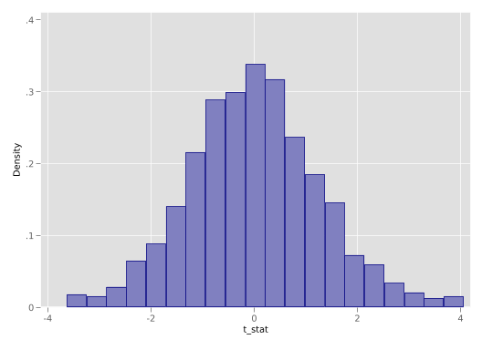
From this distribution we can calculate a p-value by asking what proportion of t-statistics from the null distribution exceed our estimated t-statistic from the unrestricted model. We do this below, observing that the p-value is quite close to that reported in Porter and Serra (2020) (who report a p-value of 0.089), only differing due to random variation in draws of the Rademacher weights.
gen aux = abs(t_stat) > abs(t_beta3_hat)
sum aux
scalar pval = r(mean)
di "The p-value is: " round(pval, 0.001)
Variable | Obs Mean Std. dev. Min Max
-------------+---------------------------------------------------------
aux | 999 .0910911 .2878827 0 1
The p-value is: .091We also could repeat this exercise with the boottest function from the boottest user-written package developed by Fischer and Roodman (2021) and arrive to the same conclusion. This function works with the last estimated model, and conducts an identical procedure to that which we have done above “by hand”. Any difference in p-values is incidental, owing to different random draws.
import delimited "data/Porter_Serra_2020.csv", clear
keep if female == 1
reg econmajor yr_2016 treatment_class treat2016 female_prof instate freshman american acumgpa gradeprinciples small_class, cluster(class_fe2)
boottest treat2016, reps(999) weight(webb) bootcluster(class_fe2) nograph(encoding automatically selected: ISO-8859-1)
(49 vars, 1,397 obs)
(770 observations deleted)
Linear regression Number of obs = 627
F(10, 11) = 8.54
Prob > F = 0.0007
R-squared = 0.0553
Root MSE = .2948
(Std. err. adjusted for 12 clusters in class_fe2)
------------------------------------------------------------------------------
| Robust
econmajor | Coefficient std. err. t P>|t| [95% conf. interval]
-------------+----------------------------------------------------------------
yr_2016 | -.0277129 .0300713 -0.92 0.377 -.0938993 .0384735
treatment_~s | -.0301045 .0243132 -1.24 0.241 -.0836176 .0234085
treat2016 | .0801413 .0364834 2.20 0.050 -.000158 .1604406
female_prof | .020855 .0344787 0.60 0.558 -.055032 .0967421
instate | .0135814 .0302513 0.45 0.662 -.0530012 .080164
freshman | .0076026 .0297698 0.26 0.803 -.0579202 .0731255
american | -.1911953 .0604617 -3.16 0.009 -.3242705 -.05812
acumgpa | -.1099001 .0391619 -2.81 0.017 -.1960949 -.0237053
gradeprinc~s | .045543 .0197507 2.31 0.042 .0020721 .089014
small_class | -.0295127 .0299336 -0.99 0.345 -.0953961 .0363707
_cons | .5104875 .1581007 3.23 0.008 .1625101 .8584648
------------------------------------------------------------------------------
Wild bootstrap-t, null imposed, 999 replications, Wald test, bootstrap clusteri
> ng by class_fe2, Webb weights:
treat2016
t(11) = 2.1967
Prob>|t| = 0.0881
95% confidence set for null hypothesis expression: [−.01594, .1575]In principle, using such a library is likely the preferred way of conducting procedures such as the wild cluster bootstrap, however it is illustrative to see how it works in practice, as we do above. A nice element of user-written procedures such as that of Roodman et al. (2019) is that it also seamlessly returns other quantities of interest which we would have to generate ourselves above, such as confidence interval, which we can see above where these values correspond closely to the original 95% CIs reported in the paper of [-0.015; 0.160].
Finally as a comparative exercise we may be interested in seeing how this procedure compares to a standard clustered bootstrap. While there are many ways we could do this – including quite easily by hand – we examine this below using Stata’s native bootstrap functionality as a part of the vce() option. It turns out that while the 95% CI on treat2016 coming from clustered bootstrap is narrower than the 95% CI from the wild cluster bootstrap (as expected), the difference is not so substantial in this particular case.
reg econmajor yr_2016 treatment_class treat2016 female_prof instate freshman american acumgpa gradeprinciples small_class, vce(bootstrap, reps(999) cluster(class_fe2))(running regress on estimation sample)
Bootstrap replications (999): .........10.........20.........30.........40.....
> ....50.........60.........70.........80.........90.........100.........110...
> ......120.........130.........140.........150.........160.........170........
> .180.........190.........200.........210.........220....x....230.........240.
> ........250.........260.........270.........280.........290.........300......
> ...310.........320.........330.........340.........350.........360.........37
> 0.........380.....x...390.........400.........410.........420.........430....
> .....440.........450.........460.........470.........480.........490.........
> 500.........510.........520.........530.........540.........550.........560..
> .......570.........580.........590.........600.........610.........620......x
> ..630.........640.........x.........660.........670.........680.........690..
> .......700.........710.........720.........730.........740.........750......x
> ..760.........770.........780.........790.........800.........810.........820
> .........830.........840.........850.........860.........870......x..880.....
> ....890.........900.........910.........920.........930.........940.........9
> 50.....x...960.........970.........980.........990......... done
x: Error occurred when bootstrap executed regress.
Linear regression Number of obs = 627
Replications = 992
Wald chi2(10) = 48.44
Prob > chi2 = 0.0000
R-squared = 0.0553
Adj R-squared = 0.0400
Root MSE = 0.2948
(Replications based on 12 clusters in class_fe2)
------------------------------------------------------------------------------
| Observed Bootstrap Normal-based
econmajor | coefficient std. err. z P>|z| [95% conf. interval]
-------------+----------------------------------------------------------------
yr_2016 | -.0277129 .0354734 -0.78 0.435 -.0972395 .0418137
treatment_~s | -.0301045 .043807 -0.69 0.492 -.1159648 .0557557
treat2016 | .0801413 .0428695 1.87 0.062 -.0038814 .164164
female_prof | .020855 .0465423 0.45 0.654 -.0703663 .1120763
instate | .0135814 .0303226 0.45 0.654 -.0458498 .0730125
freshman | .0076026 .0317318 0.24 0.811 -.0545906 .0697959
american | -.1911953 .060843 -3.14 0.002 -.3104454 -.0719452
acumgpa | -.1099001 .038292 -2.87 0.004 -.184951 -.0348492
gradeprinc~s | .045543 .0192168 2.37 0.018 .0078789 .0832072
small_class | -.0295127 .0490602 -0.60 0.547 -.1256689 .0666434
_cons | .5104875 .1564144 3.26 0.001 .2039209 .8170541
------------------------------------------------------------------------------
Note: One or more parameters could not be estimated in 7 bootstrap replicates;
standard-error estimates include only complete replications.Two-Way Fixed Effects Estimators and Heterogeneous Treatment Effects To understand the potential issues related to heterogeneous treatment effects over time and two-way fixed effect estimators, we will examine a pair of numerical examples. In particular, we will focus on the composition of the two way FE estimator \(\tau\) estimated from: \[ y_{st} = \gamma_s + \lambda_t + \tau w_{st} + \varepsilon_{st} \tag{1}\] where \(y_{st}\) is the outcome variable, \(\gamma_s\) and \(\lambda_t\) are state (unit) and time fixed effects, \(w_{st}\) is the binary treatment variable that takes the value of 1 if a state (unit) \(s\) is treated at time \(t\) and otherwise takes 0. We will work with a quite tractable example based on three units and 10 time periods, and will document how the approaches taken by Goodman-Bacon (2021) and by Chaisemartin and D’Haultfœuille (2020) to understand the two-way FE estimator compare.
The results from Goodman-Bacon (2021) and those from Chaisemartin and D’Haultfœuille (2020) are similar, however they take quite different paths to get there. Goodman-Bacon’s (like that laid out in Athey and Imbens (2022)) is “mechanical” in that it is based on the underlying difference-in-differences comparisons between all groups. The result in Chaisemartin and D’Haultfœuille (2020) is based on a potential outcomes frame-work, and counterfactuals under parallel trend assumptions. Thus to examine how these methods work requires somewhat different frameworks. In the case of Goodman-Bacon (2021), we should consider all possible DD comparisons, while in the case of Chaisemartin and D’Haultfœuille (2020) we should consider the treatment effect for each unit and time period, which requires knowing the observed and counterfactual state. While the approaches the two papers take to understand the content of the estimator differ, they refer to the same estimator, so always recover the same parameter estimate. To examine this in a more applied way, we will look at a simulated example.
To do this, let’s consider a panel of 3 states/areas over the 10 years (\(t\)) of 2000 to 2009. One of these units is entirely untreated (\(unit = 1\) or group \(U\)), one is treated at an early time period, 2003, (\(unit = 2\) or group \(k\)), and the other is treated at a later time period, 2006, (\(unit = 3\) or group \(l\)). We will construct a general structure for this data below:
Number of observations (_N) was 0, now 30.
+-------------------+
| obs unit year |
|-------------------|
1. | 1 1 2000 |
2. | 2 1 2001 |
3. | 3 1 2002 |
4. | 4 1 2003 |
5. | 5 1 2004 |
+-------------------+We will consider a simple-case where the actual data-generating process is known as: \[y_{unit,t} = 2 + 0.2 \times (t - 2000) + 1 \times unit + \beta_1 \times post \times unit + \beta_2 \times post \times unit \times (t - treat).\] Here \(unit\) refers to the unit number listed above (1, 2 or 3), \(post\) indicates that a unit is receiving treatment in the relevant time period \(t\), and \(treat\) refers to the treatment period (2003 for unit 2, and 2006 for unit 3). Let’s generate treatment, time to treatment, and post-treatment variables in Stata:
gen treat = 2006 if unit==2
replace treat = 2003 if unit==3
gen time = year - treat
gen post = time>=0 & time!=.
replace treat = 0 if treat==.
replace time = 0 if time==.
replace post = 0 if post==.
list in 1/5(20 missing values generated)
(10 real changes made)
(10 missing values generated)
(10 real changes made)
(10 real changes made)
(0 real changes made)
+-----------------------------------------+
| obs unit year treat time post |
|-----------------------------------------|
1. | 1 1 2000 0 0 0 |
2. | 2 1 2001 0 0 0 |
3. | 3 1 2002 0 0 0 |
4. | 4 1 2003 0 0 0 |
5. | 5 1 2004 0 0 0 |
+-----------------------------------------+This specification allows for each unit to have its own fixed effect, given that \(unit\) is multiplied by 1, and allows for a general time trend increasing by 0.2 units each period across the whole sample. These parameters are not so important, as what we care about are the treatment effects themselves. The impact of treatment comes from the units \(\beta_1\) and \(\beta_2\). The first of these, \(\beta_1\), captures an immediate unit-specific jump when treatment is implemented which remains stable over time. The second of these, \(\beta_2\), implies a trend break occurring only for the treated units once treatment comes into place. We will consider 2 cases below. In the first case \(\beta_1 = 1\) and \(\beta_2 = 0\) (a simple case with a constant treatment effect per unit):
+-----------------------------------------------+
| obs unit year treat time post y1 |
|-----------------------------------------------|
1. | 1 1 2000 0 0 0 3 |
2. | 2 1 2001 0 0 0 3.2 |
3. | 3 1 2002 0 0 0 3.4 |
4. | 4 1 2003 0 0 0 3.6 |
5. | 5 1 2004 0 0 0 3.8 |
+-----------------------------------------------+and in a second case \(\beta_1 = 1\) and \(\beta_2 = 0.45\). This is a more complex case in which there are heterogeneous treatment effects over time:
gen y2 = 2 + (year - 2000) * 0.2 + 1 * unit + 1 * post * unit + 0.45 * post * unit * time
list in 1/5
+-----------------------------------------------------+
| obs unit year treat time post y1 y2 |
|-----------------------------------------------------|
1. | 1 1 2000 0 0 0 3 3 |
2. | 2 1 2001 0 0 0 3.2 3.2 |
3. | 3 1 2002 0 0 0 3.4 3.4 |
4. | 4 1 2003 0 0 0 3.6 3.6 |
5. | 5 1 2004 0 0 0 3.8 3.8 |
+-----------------------------------------------------+These two cases are plotted next where the line with empty circles refers to group \(U\), the line with black filled circles refers to group \(k\) and the line with squares refers to group \(l\)
twoway connected y1 year if unit == 1, msymbol(Oh) mcolor(black) lcolor(black) || connected y1 year if unit == 2, msymbol(O) mcolor(black) lcolor(black) || connected y1 year if unit == 3, msymbol(Sh) mcolor(black) lcolor(black) ||, ytitle("Outcome Variable") xtitle("Time") title("(a) Simple Decomposition", position(6)) legend(off) scheme(plottig) xline(2002, lpattern(dash) lcolor(red)) xline(2005, lpattern(dash) lcolor(red)) name(PanelA, replace) nodraw
twoway connected y2 year if unit == 1, msymbol(Oh) mcolor(black) lcolor(black) || connected y2 year if unit == 2, msymbol(O) mcolor(black) lcolor(black) || connected y2 year if unit == 3, msymbol(Sh) mcolor(black) lcolor(black) ||, ytitle("Outcome Variable") xtitle("Time") title("(b) Decomposition with trends", position(6)) legend(off) scheme(plottig) xline(2002, lpattern(dash) lcolor(red)) xline(2005, lpattern(dash) lcolor(red)) name(PanelB, replace) nodraw
graph combine PanelA PanelB, rows(1) scheme(plottig)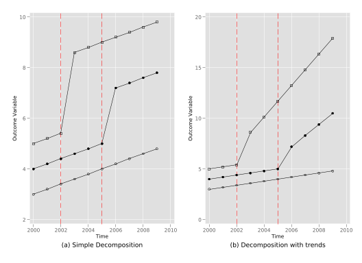
First we will estimate the parameter by two-way fixed effects regression. This will provide us with the parameter estimate that both Goodman-Bacon (2021) and Chaisemartin and D’Haultfœuille (2020) will construct in a piece-wise fashion. This is done relatively simply in Stata. We simply estimate Equation 1 by linear regression using regress as laid out below:
qui reg y1 i.unit i.year post
di as text "The parameter estimates by two-way fixed effects regression for the case 1 is: " _b[post]
qui reg y2 i.unit i.year post
di as text "The parameter estimates by two-way fixed effects regression for the case 2 is: " _b[post]The parameter estimates by two-way fixed effects regression for the case 1 is:
> 2.4545456
The parameter estimates by two-way fixed effects regression for the case 2 is:
> 3.8045454Here we see that the coefficient of interest is 2.454545. We can see that this is between the two unit-specific jumps that occur with treatment (2 and 3). We will see below why it takes this particular weighted average.
Using the values simulated above, let’s see how the Goodman-Bacon (2021) decomposition allows us to understand estimated treatment effects. We will consider both:
- (a) Simple Decomposition
- (b) Decomposition with trends
The methodology Goodman-Bacon (2021) decomposition suggests that we should calculate all \(2 \times 2\) combinations of states and time where post-treatment units are compared to “untreated” unit (laid out at more length in the boo). In this example, this provides four specific effects, which contribute to \(\widehat{\tau}\) as a weighted mean. The specific effects desired are:
These will then be weighted as laid out in Goodman-Bacon (2021) to provide the regression-based estimate.
In this case the Goodman-Bacon (2021) methodology estimate \(\widehat{\tau}\) weighting the next four DD comparisons
twoway connected y1 year if unit == 1, msymbol(Oh) mcolor(black) lcolor(black) || connected y1 year if unit == 2, msymbol(O) mcolor(black%20) lcolor(black%20) || connected y1 year if unit == 3, msymbol(Sh) mcolor(black) lcolor(black) ||, ytitle("Outcome Variable") xtitle("Time") title("A. Early Group v/s Untreated Group") legend(off) scheme(plottig) xline(2002, lpattern(dash) lcolor(red)) xline(2005, lpattern(dash) lcolor(red)) name(PanelA, replace) nodraw
twoway connected y1 year if unit == 1, msymbol(Oh) mcolor(black) lcolor(black) || connected y1 year if unit == 2, msymbol(O) mcolor(black) lcolor(black) || connected y1 year if unit == 3, msymbol(Sh) mcolor(black%20) lcolor(black%20) ||, ytitle("Outcome Variable") xtitle("Time") title("B. Later Group v/s Untreated Group") legend(off) scheme(plottig) xline(2002, lpattern(dash) lcolor(red)) xline(2005, lpattern(dash) lcolor(red)) name(PanelB, replace) nodraw
twoway connected y1 year if unit == 1 & year <= 2005, msymbol(Oh) mcolor(black%20) lcolor(black%20) || connected y1 year if unit == 2 & year <= 2005, msymbol(O) mcolor(black) lcolor(black) || connected y1 year if unit == 3 & year <= 2005, msymbol(Sh) mcolor(black) lcolor(black) ||, ytitle("Outcome Variable") xtitle("Time") title("C. Early Group v/s Later Group Before 2006") legend(off) scheme(plottig) xline(2002, lpattern(dash) lcolor(red)) xline(2005, lpattern(dash) lcolor(red)) xlabel(2000(2)2010) name(PanelC, replace) nodraw
twoway connected y1 year if unit == 1 & year >= 2003, msymbol(Oh) mcolor(black%20) lcolor(black%20) || connected y1 year if unit == 2 & year >= 2003, msymbol(O) mcolor(black) lcolor(black) || connected y1 year if unit == 3 & year >= 2003, msymbol(Sh) mcolor(black) lcolor(black) ||, ytitle("Outcome Variable") xtitle("Time") title("D. Early Group v/s Later Group After 2003") legend(off) scheme(plottig) xline(2002, lpattern(dash) lcolor(red)) xline(2005, lpattern(dash) lcolor(red)) xlabel(2000(2)2010) name(PanelD, replace) nodraw
graph combine PanelA PanelB PanelC PanelD, scheme(plottig)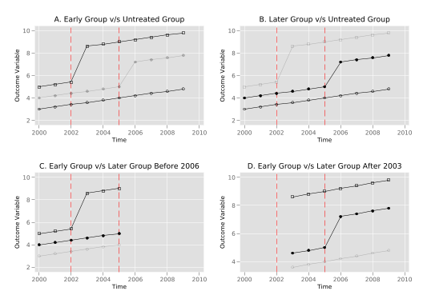
As seen in the plots, in the simple decomposition these effects are constants of 3 and 2 for early and later treated units given that the “treatment effect” is simply \(1 \times unit\) in each case.
In order to calculate the effects we start making the simple DD comparison of the untreated group \(U\) (\(unit = 1\)) with the early treated group \(k\) (\(unit = 3\)) getting \(\widehat{\beta}^{2 \times 2}_{kU}\) as \[\widehat{\beta}^{2 \times 2}_{kU} = \left( \overline{y}_k^{Post(k)} - \overline{y}_k^{Pre(k)} \right) - \left( \overline{y}_U^{Post(k)} - \overline{y}_U^{Pre(k)} \right)\] Where \(\overline{y}_k^{Post(k)}\) is the mean of the outcome variable for the early treated group \(k\) (\(unit = 3\)) posterior to treatment, from 2003, \(\overline{y}_k^{Pre(k)}\) is the mean for of the outcome variable for the early treated group \(U\) (\(unit = 3\)) prior to treatment, (up until 2002), and \(\overline{y}_U^{Post(k)}, \overline{y}_U^{Post(k)}\) are the analogous quantities for the untreated group \(U\) (\(unit = 1\))
qui sum y1 if unit == 3 & post == 1
scalar y1treatmeanpost = r(mean)
qui sum y1 if unit == 3 & post == 0
scalar y1treatmeanpre = r(mean)
scalar dify1treat = y1treatmeanpost - y1treatmeanpre
qui sum y1 if unit == 1 & year >= 2003
scalar y1controlmeanpost = r(mean)
qui sum y1 if unit == 1 & year < 2003
scalar y1controlmeanpre = r(mean)
scalar dify1control = y1controlmeanpost - y1controlmeanpre
di as result round(dify1treat - dify1control, 0.01)3This result also can be obtained from the linear regression with the canonical DD formula \[y_{unit,t} = \alpha_0 + \alpha_1 \times Post(k) + \alpha_2 \times \mathbf{1}(unit = 3) + \beta_{kU}^{2\times2} \times Post(k) \times \mathbf{1}(unit = 3) + \varepsilon_i\] Where \(Post(k)\) indicates that the year is equal or greater than the year where the group \(k\) (\(unit = 3\)) received the treatment (2003) and \(\mathbf{1}(unit = 3)\) indicates if the observation is from the early treated group \(k\) (\(unit = 3\))
Source | SS df MS Number of obs = 20
-------------+---------------------------------- F(3, 16) = 266.11
Model | 119.750004 3 39.9166679 Prob > F = 0.0000
Residual | 2.40000019 16 .150000012 R-squared = 0.9804
-------------+---------------------------------- Adj R-squared = 0.9767
Total | 122.150004 19 6.42894757 Root MSE = .3873
------------------------------------------------------------------------------
y1 | Coefficient Std. err. t P>|t| [95% conf. interval]
-------------+----------------------------------------------------------------
1.post2003 | .9999999 .2672613 3.74 0.002 .4334314 1.566568
3.unit | 2 .3162278 6.32 0.000 1.329627 2.670373
|
post2003#|
unit |
1 3 | 3 .3779645 7.94 0.000 2.198751 3.801249
|
_cons | 3.2 .2236068 14.31 0.000 2.725975 3.674025
------------------------------------------------------------------------------A third way to obtain this is from the next linear regression \[y_{unit,t} = \alpha_0 + \beta_{kU}^{2 \times 2} \times Post + \sum_{i = 2001}^{2009} \alpha_{i-2000} \times \mathbf{1}(year = i) + \alpha_{10} \times \mathbf{1}(unit = 3) + \varepsilon_i\] Where in this case \(Post\) indicates if the unit is treated (note for group \(U\) this will be always 0), \(\mathbf{1}(year = i)\) indicates if the observation is in period \(i \in \{2001, \ldots, 2009\}\) and \(\mathbf{1}(unit = 3)\) keep its meaning
Source | SS df MS Number of obs = 20
-------------+---------------------------------- F(11, 8) = .
Model | 122.150004 11 11.1045458 Prob > F = .
Residual | 0 8 0 R-squared = 1.0000
-------------+---------------------------------- Adj R-squared = 1.0000
Total | 122.150004 19 6.42894757 Root MSE = 0
------------------------------------------------------------------------------
y1 | Coefficient Std. err. t P>|t| [95% conf. interval]
-------------+----------------------------------------------------------------
post | 3 . . . . .
|
year |
2001 | .1999999 . . . . .
2002 | .4000001 . . . . .
2003 | .6000001 . . . . .
2004 | .8 . . . . .
2005 | .9999999 . . . . .
2006 | 1.2 . . . . .
2007 | 1.4 . . . . .
2008 | 1.6 . . . . .
2009 | 1.8 . . . . .
|
3.unit | 2 . . . . .
_cons | 3 . . . . .
------------------------------------------------------------------------------Now we store this result for posterior use
The next DD comparison we calculate is that which compares the later treated group \(l\) (\(unit = 2\)) with the untreated group \(U\) (\(unit = 1\)), resulting in \(\widehat{\beta}^{2 \times 2}_{lU}\). As above, we can generate this DD estimate in a number of ways (most simply by double-differencing with means), and this will then be stored.
qui sum y1 if unit == 2 & post == 1
scalar y1treatmeanpost = r(mean)
qui sum y1 if unit == 2 & post == 0
scalar y1treatmeanpre = r(mean)
scalar dify1treat = y1treatmeanpost - y1treatmeanpre
qui sum y1 if unit == 1 & year >= 2006
scalar y1controlmeanpost = r(mean)
qui sum y1 if unit == 1 & year < 2006
scalar y1controlmeanpre = r(mean)
scalar dify1control = y1controlmeanpost - y1controlmeanpre
scalar blu = dify1treat - dify1control
di as result round(blu, 0.01)2Next we calculate the effects from the DD comparisons of early and later treated groups, up until the later treated group receives treatment (2006). This is: \[\widehat{\beta}^{2 \times 2, k}_{kl} \equiv \left( \overline{y}^{Mid(k,l)}_{k} - \overline{y}^{Pre(k)}_{k} \right) - \left( \overline{y}^{Mid(k,l)}_{l} - \overline{y}^{Pre(k)}_{l} \right)\] where \(\overline{y}^{Mid(k,l)}_{k}\) is the mean of the outcome variable for the early treated group \(k\) (\(unit = 3\)) in the period between the treatment for the group \(k\) and the group \(l\) (\(unit = 2\)), from 2003 to 2005, \(\overline{y}^{Pre(k)}_{k}\) is the mean for of the outcome variable for the early treated group \(k\) (\(unit = 3\)) previous to treatment, until 2002, and \(\overline{y}^{Mid(k,l)}_{l}, \overline{y}^{Pre(k)}_{l}\) are the analogous for the later treated group \(l\) (\(unit = 2\))
Source | SS df MS Number of obs = 12
-------------+---------------------------------- F(7, 4) = .
Model | 39.0500037 7 5.57857195 Prob > F = .
Residual | 0 4 0 R-squared = 1.0000
-------------+---------------------------------- Adj R-squared = 1.0000
Total | 39.0500037 11 3.55000033 Root MSE = 0
------------------------------------------------------------------------------
y1 | Coefficient Std. err. t P>|t| [95% conf. interval]
-------------+----------------------------------------------------------------
post | 3 . . . . .
|
year |
2001 | .1999998 . . . . .
2002 | .4000001 . . . . .
2003 | .6000001 . . . . .
2004 | .8000001 . . . . .
2005 | .9999999 . . . . .
|
3.unit | 1 . . . . .
_cons | 4 . . . . .
------------------------------------------------------------------------------
3The last DD comparison is for early and later treated groups, starting from 2006 \[\widehat{\beta}^{2 \times 2, l}_{kl} \equiv \left( \overline{y}^{Post(l)}_{l} - \overline{y}^{Mid(k,l)}_{l} \right) - \left( \overline{y}^{Post(l)}_{k} - \overline{y}^{Mid(k,l)}_{k} \right)\] Where \(\overline{y}^{Post(l)}_{l}\) is the mean of the outcome variable for the later treated group \(l\) (\(unit = 2\)) in the period after this group received the treatment, from 2006, \(\overline{y}^{Mid(k,l)}_{l}\) is the mean for of the outcome variable for the later treated group \(l\) (\(unit = 2\)) in the period between the treatment for the group \(k\) (\(unit = 3\)) and the group \(l\), from 2003 to 2005, and \(\overline{y}^{Post(l)}_{k}, \overline{y}^{Mid(k,l)}_{k}\) are the analogous quantities for the early treated group \(k\) (\(unit = 3\)). We can generate and save this quantity as we have previously:
Source | SS df MS Number of obs = 14
-------------+---------------------------------- F(8, 5) = .
Model | 42.4685725 8 5.30857156 Prob > F = .
Residual | 0 5 0 R-squared = 1.0000
-------------+---------------------------------- Adj R-squared = 1.0000
Total | 42.4685725 13 3.26681327 Root MSE = 0
------------------------------------------------------------------------------
y1 | Coefficient Std. err. t P>|t| [95% conf. interval]
-------------+----------------------------------------------------------------
post | 2 . . . . .
|
year |
2004 | .2 . . . . .
2005 | .3999999 . . . . .
2006 | .5999996 . . . . .
2007 | .7999996 . . . . .
2008 | .9999999 . . . . .
2009 | 1.2 . . . . .
|
3.unit | 2 . . . . .
_cons | 4.6 . . . . .
------------------------------------------------------------------------------
2This comparison is the comparison which can potentially result in undesired results if treatment effects are dynamic over time because it views group 3 (the previously treated group) as a control. However, in this case, given that treatment effects are homogenous over time we do not have a major problem here, and we observe that \(\widehat{\beta}^{2 \times 2, l}_{kl}=2\).
We can now arrive to the OLS estimate of this two-way fixed effect model by generating the weighted mean of the previous estimates as: \[\widehat{\tau} = W_{kU} \cdot \widehat{\beta}^{2\times 2}_{kU} + W_{lU} \cdot \widehat{\beta}^{2\times 2}_{lU} + W_{kl}^{k} \cdot \widehat{\beta}^{2\times 2,k}_{kl} + W_{kl}^{l} \cdot \widehat{\beta}^{2\times 2,l}_{kl}\] Where each \(W\) is the weight that the respective \(\beta\) has in this weighted mean, specifically: \[\begin{align*} W_{kU} & = \frac{(n_k + n_U)^2\widehat{V}^D_{kU}}{\widehat{V}^D} \quad & \quad W_{lU} & = \frac{(n_l + n_U)^2\widehat{V}^D_{lU}}{\widehat{V}^D} \\ W_{kl}^k & = \frac{[(n_k + n_l)(1 - \overline{D}_l)]^2\widehat{V}^{D,k}_{kl}}{\widehat{V}^D} \quad & \quad W_{kl}^l & = \frac{[(n_k + n_l)(1 - \overline{D}_k)]^2\widehat{V}^{D,l}_{kl}}{\widehat{V}^D} \end{align*}\] Where \(n\) refers to the sample share of the group
\(\overline{D}\) referes to the share of time the group is treated
and \(\widehat{V}\) refers to how much treatment varies
qui sum post if unit == 3
scalar Dk = r(mean)
qui sum post if unit == 2
scalar Dl = r(mean)
scalar VkU = 0.5*0.5*(Dk)*(1-Dk)
scalar VlU = 0.5*0.5*(Dl)*(1-Dl)
scalar Vklk = 0.5*0.5*((Dk-Dl)/(1-Dl))*((1-Dk)/(1-Dl))
scalar Vkll = 0.5*0.5*(Dl/Dk)*((Dk-Dl)/(Dk))
qui reg post i.unit i.year
predict residuals, residuals
gen residuals2 = residuals^2
qui sum residuals2
scalar VD = r(mean)The weights are thus the following:
scalar wkU = ((nk + nu)^2*VkU)/VD
di wkU
scalar wlU = ((nl + nu)^2*VlU)/VD
di wlU
scalar wklk = (((nk + nl)*(1-Dl))^2*Vklk)/VD
di wklk
scalar wkll = (((nk + nl)*Dk)^2*Vkll)/VD
di wkll.31818181
.36363635
.13636363
.18181817With this in mind the \(\tau\) estimate is
as observed in the two-way fixed effect estimate above.
In this case the Goodman-Bacon (2021) decomposition follows as above generating the treatment effect as follows:
twoway connected y2 year if unit == 1, msymbol(Oh) mcolor(black) lcolor(black) || connected y2 year if unit == 2, msymbol(O) mcolor(black%20) lcolor(black%20) || connected y2 year if unit == 3, msymbol(Sh) mcolor(black) lcolor(black) ||, ytitle("Outcome Variable") xtitle("Time") title("A. Early Group v/s Untreated Group") legend(off) scheme(plottig) xline(2002, lpattern(dash) lcolor(red)) xline(2005, lpattern(dash) lcolor(red)) name(PanelA, replace) nodraw
twoway connected y2 year if unit == 1, msymbol(Oh) mcolor(black) lcolor(black) || connected y2 year if unit == 2, msymbol(O) mcolor(black) lcolor(black) || connected y2 year if unit == 3, msymbol(Sh) mcolor(black%20) lcolor(black%20) ||, ytitle("Outcome Variable") xtitle("Time") title("B. Later Group v/s Untreated Group") legend(off) scheme(plottig) xline(2002, lpattern(dash) lcolor(red)) xline(2005, lpattern(dash) lcolor(red)) name(PanelB, replace) nodraw
twoway connected y2 year if unit == 1 & year <= 2005, msymbol(Oh) mcolor(black%20) lcolor(black%20) || connected y2 year if unit == 2 & year <= 2005, msymbol(O) mcolor(black) lcolor(black) || connected y2 year if unit == 3 & year <= 2005, msymbol(Sh) mcolor(black) lcolor(black) ||, ytitle("Outcome Variable") xtitle("Time") title("C. Early Group v/s Later Group Before 2006") legend(off) scheme(plottig) xline(2002, lpattern(dash) lcolor(red)) xline(2005, lpattern(dash) lcolor(red)) xlabel(2000(2)2010) name(PanelC, replace) nodraw
twoway connected y2 year if unit == 1 & year >= 2003, msymbol(Oh) mcolor(black%20) lcolor(black%20) || connected y2 year if unit == 2 & year >= 2003, msymbol(O) mcolor(black) lcolor(black) || connected y2 year if unit == 3 & year >= 2003, msymbol(Sh) mcolor(black) lcolor(black) ||, ytitle("Outcome Variable") xtitle("Time") title("D. Early Group v/s Later Group After 2003") legend(off) scheme(plottig) xline(2002, lpattern(dash) lcolor(red)) xline(2005, lpattern(dash) lcolor(red)) xlabel(2000(2)2010) name(PanelD, replace) nodraw
graph combine PanelA PanelB PanelC PanelD, scheme(plottig)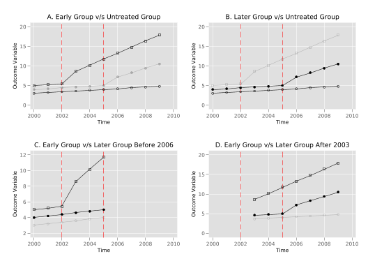
As seen in the plots, in the decomposition with trends these effects are no longer constants of 3 and 2 for early and later treated units given that the “treatment effect” is no longer simply \(1 \times unit\) in each case.
drop residuals residuals2
* 2x2 DD Regressions for betas
qui reg y2 post i.year i.unit if unit != 2
scalar bku = _b[post]
qui reg y2 post i.year i.unit if unit != 3
scalar blu = _b[post]
qui reg y2 post i.year i.unit if unit != 1 & year < 2006
scalar bklk = _b[post]
qui reg y2 post i.year i.unit if unit != 1 & year > 2002
scalar bkll = _b[post]
* Share of time treated
qui sum post if unit == 3
scalar Dk = r(mean)
qui sum post if unit == 2
scalar Dl = r(mean)
* How much treatment varies
scalar VkU = 0.5*0.5*(Dk)*(1-Dk)
scalar VlU = 0.5*0.5*(Dl)*(1-Dl)
scalar Vklk = 0.5*0.5*((Dk-Dl)/(1-Dl))*((1-Dk)/(1-Dl))
scalar Vkll = 0.5*0.5*(Dl/Dk)*((Dk-Dl)/(Dk))
qui reg post i.unit i.year
predict residuals, residuals
gen residuals2 = residuals^2
qui sum residuals2
scalar VD = r(mean)
* Share of sample
scalar nk = 1/3
scalar nl = 1/3
scalar nu = 1/3
* Weights
scalar wkU = ((nk + nu)^2*VkU)/VD
di wkU
scalar wlU = ((nl + nu)^2*VlU)/VD
di wlU
scalar wklk = (((nk + nl)*(1-Dl))^2*Vklk)/VD
di wklk
scalar wkll = (((nk + nl)*Dk)^2*Vkll)/VD
di wkll
* Tau
scalar tau = wkU * bku + wlU * blu + wklk * bklk + wkll * bkll
di tau.31818181
.36363635
.13636363
.18181817
3.8045452What is noteworthy here is the surprising behaviour flagged by Goodman-Bacon (2021) for the final comparison based on the case where the earlier treated unit (unit 3) is used as a control for the later trated unit (unit 2). In this case, given that there are time-varying treatment effects, despite the fact that each unit-specific treatment effect is positive, we observe that the parameter \(\widehat{\beta}^{2 \times 2, l}_{kl}\) is actually negative. In this particular example this negative value (-1.375) is not sufficient to turn the weighted treatment effect estimate negative, but if you play around with the size of the parameters \(\beta_1\) and \(\beta_2\) above as well as treatment timing, you will see that large enough differences in trends can result in such estimates! Here, as above, we see that when we aggregate unit-specific estimates as tau, the estimate (by definition) agrees with the estimate generated by two-way fixed effect models previously.
Now, we will show that the procedures described in Chaisemartin and D’Haultfœuille (2020), despite arriving to the estimator in a different way, also let us understand how the regression weights the two-way fixed effect estimator. In this case, rather than considering each treatment-control comparison pair, the authors note that the two-way fixed estimator can be conceived as a weighted sum of each single group by time period in any post-treatment group.
The authors define \(\widehat{\beta}_{fe}\) as the coefficient estimated in the following (standard) two-way fixed effects regression: \[y_{i,s,t} = \beta_0 + \beta_{fe} D_{s,t} + \mu_s + \lambda_t + \varepsilon_{s,t}\] Where \(D_{s,t}\) is the mean over \(i\) of a binary indicator variable that takes value of 1 if the unit \(i\) in state \(s\) is treated at period \(t\) and 0 otherwise, in our case as we have one observartion per state \(D_{s,t} = post_{s,t}\), meanwhile \(\mu_s\) and \(\lambda_t\) are state and time fixed effects. This is, of course, precisely the same model as we have estimated in Equation 1, implying that \(\beta_{fe}=2.4545\) in cases without post-treatment trends (y1), or \(\beta_{fe}=3.8045\) in cases with post-treatment dynamics (y2).
Chaisemartin and D’Haultfœuille (2020) define the ATE for any (\(s,t\)) cell as: \[\Delta_{s,t} = \frac{1}{N_{s,t}} \sum_{i = 1}^{N_{s,t}}[Y_{i,s,t}(1) - Y_{i,s,t}(0)].\] You will note that here we require an unobserved counterfactual \(Y_{i,s,t}(0)\). If we impose a parallel trend assumption, such a counterfactual can be inferred from unit-specific fixed effects, time-specific fixed effects, and the constant term. Because in this case we know our data generating process, we can simply generate this counterfactual as the data generating process, absent any effect of treatment. Below we generate such a counterfactual, where you will note that we impose that this is an ‘untreated’ counterfactual by setting the treatment effects to 0 in the generation of y1_c below:
It is likely useful to confirm to ourselves that graphically we are indeed generating the untreated counterfactual in this way.
line y1 y1_c year if unit == 2, scheme(plottig) ytitle("Y") xtitle("Year") lwidth(thick thick) lpattern(solid dash) lcolor(blue red) legend(off) text(7 2007 "Y(1)" 5 2007 "Y(0)") title("(a) Unit 2 Outcome and Counterfactual", position(6)) name(unit2, replace) nodraw
line y1 y1_c year if unit == 3, scheme(plottig) ytitle("Y") xtitle("Year") lwidth(thick thick) lpattern(solid dash) lcolor(blue red) legend(off) text(9 2007 "Y(1)" 6 2007 "Y(0)") title("(b) Unit 3 Outcome and Counterfactual", position(6)) name(unit3, replace) nodraw
graph combine unit2 unit3, rows(1) scheme(plottig)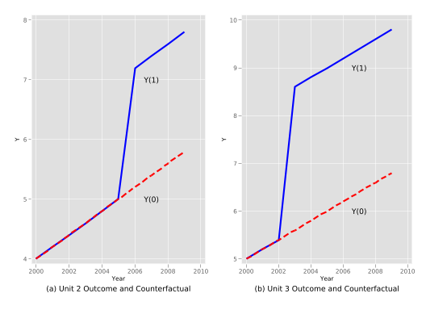
This allows us to calculate a state- and time-period specific treatment effect (\(\Delta_{s,t}\)) for each treated unit. We do so, calculating this quantity for all units in which treatment exists:
(19 missing values generated)
+-------------------------------------+
| y1 y1_c unit year Delta_st |
|-------------------------------------|
17. | 7.2 5.2 2 2006 2 |
18. | 7.4 5.4 2 2007 2 |
19. | 7.6 5.6 2 2008 2 |
20. | 7.8 5.8 2 2009 2 |
24. | 8.6 5.6 3 2003 3 |
|-------------------------------------|
25. | 8.8 5.8 3 2004 3 |
26. | 9 6 3 2005 3 |
27. | 9.2 6.2 3 2006 3 |
28. | 9.4 6.4 3 2007 3 |
29. | 9.6 6.6 3 2008 3 |
|-------------------------------------|
30. | 9.8 6.8 3 2009 3 |
+-------------------------------------+Unsurprisingly, given the data generating process we have defined, we see that each treatment effect is 2 for unit 2, and 3 for unit 3. If we were to calculate a mean treatment effect by hand, we may wish to simply take an average over all periods and units. However, one of the key results of Chaisemartin and D’Haultfœuille (2020) is to show that under a series of standard assumptions \[\beta_{fe} = E \left[ \sum_{s,t:D_{s,t}=1}\frac{N_{s,t}}{N_1}w_{s,t}\Delta_{s,t} \right]\] Where \(N_1\) refers to the sum of all treated observations and \[w_{s,t} = \frac{\varepsilon_{s,t}}{\sum_{s,t:D_{s,t}=1}\frac{N_{s,t}}{N_1}\varepsilon_{s,t}}\] Where \(\varepsilon_{s,t}\) is the residual from a regression of \(D_{s,t}\) on state and time fixed-effects. To confirm this in our data, we will estimate these regression residuals and add them into the dataframe:
quietly{
reg post i.unit i.year
predict eps_st, residuals
replace eps_st = . if post != 1
sum eps_st
gen w_st = eps_st / r(sum)
format w_st %8.7f
}
list y1 y1_c unit year Delta_st w_st if post == 1, sepby(unit)
+-------------------------------------------------+
| y1 y1_c unit year Delta_st w_st |
|-------------------------------------------------|
17. | 7.2 5.2 2 2006 2 0.1363636 |
18. | 7.4 5.4 2 2007 2 0.1363636 |
19. | 7.6 5.6 2 2008 2 0.1363636 |
20. | 7.8 5.8 2 2009 2 0.1363636 |
|-------------------------------------------------|
24. | 8.6 5.6 3 2003 3 0.1515152 |
25. | 8.8 5.8 3 2004 3 0.1515152 |
26. | 9 6 3 2005 3 0.1515152 |
27. | 9.2 6.2 3 2006 3 0.0000000 |
28. | 9.4 6.4 3 2007 3 0.0000000 |
29. | 9.6 6.6 3 2008 3 0.0000000 |
30. | 9.8 6.8 3 2009 3 0.0000000 |
+-------------------------------------------------+Note here that after generating \(w_{s,t}\) we print this out using the round function to avoid very small digits appearing which are only different to zero given machine precision. The key thing that we can see is that the effective weighting of treatment effects which occurs in regression is quite different to what we would expect. Indeed, four periods are given 0 weights! Finally, we can confirm that this decomposition gives us the two-way fixed effect estimate by multiplying \(\Delta_{s,t}\) and \(w_{s,t}\) and summing:
gen Delta_times_w = Delta_st * w_st
sum Delta_times_w
di "de Chaisemartin and D'Haultfoeuille's decomposition returns an estimates of: " r(sum)(19 missing values generated)
Variable | Obs Mean Std. dev. Min Max
-------------+---------------------------------------------------------
Delta_time~w | 11 .2231405 .192262 3.03e-16 .4545455
de Chaisemartin and D'Haultfoeuille's decomposition returns an estimates of: 2.
> 4545456We can see that correctly, this decomposition also returns the two-way fixed effect estimate of 2.4545.
We can follow precisely the same series of steps to see the case of the decomposition where treatment exposition also results in a trend-break. To see this, we conduct each of the above steps below, however here we have not produced similar graphs (though you may wish to do so to confirm that counterfactuals make sense):
gen y2_c = 2 + (year - 2000) * 0.2 + 1 * unit + 0 * post * unit + 0 * post * unit * (time)
gen Delta_st2 = y2 - y2_c if post == 1
list y2 y2_c unit year Delta_st2 w_st if post == 1, sepby(unit)(19 missing values generated)
+---------------------------------------------------+
| y2 y2_c unit year Delta_~2 w_st |
|---------------------------------------------------|
17. | 7.2 5.2 2 2006 2 0.1363636 |
18. | 8.3 5.4 2 2007 2.9 0.1363636 |
19. | 9.4 5.6 2 2008 3.8 0.1363636 |
20. | 10.5 5.8 2 2009 4.7 0.1363636 |
|---------------------------------------------------|
24. | 8.6 5.6 3 2003 3 0.1515152 |
25. | 10.15 5.8 3 2004 4.349999 0.1515152 |
26. | 11.7 6 3 2005 5.7 0.1515152 |
27. | 13.25 6.2 3 2006 7.05 0.0000000 |
28. | 14.8 6.4 3 2007 8.4 0.0000000 |
29. | 16.35 6.6 3 2008 9.75 0.0000000 |
30. | 17.9 6.8 3 2009 11.1 0.0000000 |
+---------------------------------------------------+Because there is no difference in the structure of the treatment indicator or the unit and time fixed effects, the residuals \(w_{s,t}\) are identical, though of course the treatment effects themselves, \(\Delta_{s,t}\) are not. Thus, once again we see that later treatment effects for unit 3 (precisely those units for which treatment effects are largest), are given zero weights. Finally, again we can calculate the two-way fixed effect estimate following this decomposition by summing across units, capturing the estimate we have previously observed in regression models of 3.804545.
gen Delta_times_w2 = Delta_st2 * w_st
sum Delta_times_w2
di "de Chaisemartin and Xavier D'Haultfoeuille's decomposition returns an estimates of: " r(sum)(19 missing values generated)
Variable | Obs Mean Std. dev. Min Max
-------------+---------------------------------------------------------
Delta_time~2 | 11 .3458678 .3132175 7.12e-16 .8636364
de Chaisemartin and Xavier D'Haultfoeuille's decomposition returns an estimates
> of: 3.8045454Depending on the nature of treatment assignment, ie the number of treated periods, as well as the period in which treatment is adopted in different units, these weights will vary, and can even be negative. You may wish to explore alternative set-ups and confirm to yourself that this is the case, and see that regardless of the nature of the setting, both Goodman-Bacon (2021) and Chaisemartin and D’Haultfœuille (2020)’s decompositions recover the two-way fixed effect estimate.
To understand the equivalence between the panel event study model described in Section 4.4.2.1 of the book and the “Interaction-weighted (IW) estimator” proposed by Sun and Abraham (2021) we work with data from Stevenson and Wolfers (2006) which examines the effect of the staggered adoption of no-default divorce reforms (_nfd) and female suicide (asmrs) in United States for 49 states (stfips) from 1964 to 1996. We begin by loading the data below, and confirming that it effectively consists of a balanced sample of 49 states (we will denote using \(s\) below) over 33 years (denoted as \(t\)):
(encoding automatically selected: ISO-8859-1)
(10 vars, 1,617 obs)
1,617
+--------------------------------------------------------------+
1. | stfips | year | _nfd | post | asmrs | pcinc | asmrh |
| 1 | 1964 | 1971 | 0 | 35.63988 | 12406.18 | 5.007341 |
|--------------------------------------------------------------|
| cases | weight | copop |
| .0123122 | 1715156 | 1715156 |
+--------------------------------------------------------------+
+--------------------------------------------------------------+
2. | stfips | year | _nfd | post | asmrs | pcinc | asmrh |
| 1 | 1965 | 1971 | 0 | 41.54375 | 13070.21 | 4.425367 |
|--------------------------------------------------------------|
| cases | weight | copop |
| .0104194 | 1715156 | 1725186 |
+--------------------------------------------------------------+
+--------------------------------------------------------------+
3. | stfips | year | _nfd | post | asmrs | pcinc | asmrh |
| 1 | 1966 | 1971 | 0 | 34.25233 | 13526.66 | 4.874819 |
|--------------------------------------------------------------|
| cases | weight | copop |
| .0099001 | 1715156 | 1735219 |
+--------------------------------------------------------------+
+--------------------------------------------------------------+
4. | stfips | year | _nfd | post | asmrs | pcinc | asmrh |
| 1 | 1967 | 1971 | 0 | 34.46502 | 13918.19 | 5.362014 |
|--------------------------------------------------------------|
| cases | weight | copop |
| .0099747 | 1715156 | 1745250 |
+--------------------------------------------------------------+
+--------------------------------------------------------------+
5. | stfips | year | _nfd | post | asmrs | pcinc | asmrh |
| 1 | 1968 | 1971 | 0 | 40.44011 | 14684.81 | 4.643759 |
|--------------------------------------------------------------|
| cases | weight | copop |
| .0124007 | 1715156 | 1755283 |
+--------------------------------------------------------------+In order to prepare our dataset we note that the variable _nfd contains the year a state adopts a law (\(Event_s\)) as a string, and define a variable timeToTreat as the difference between year \(t\) and \(Event_s\) after converting _nfd to numeric:
(429 missing values generated)
+------------------------+
| year _nfd timeTo~t |
|------------------------|
1. | 1964 1971 -7 |
2. | 1965 1971 -6 |
3. | 1966 1971 -5 |
4. | 1967 1971 -4 |
5. | 1968 1971 -3 |
6. | 1969 1971 -2 |
7. | 1970 1971 -1 |
8. | 1971 1971 0 |
9. | 1972 1971 1 |
10. | 1973 1971 2 |
+------------------------+Because _nfd is missing for states which did not pass a no fault divorce law in the period under study, this variable thus captures leads (periods prior to treatment) and lags (periods post treatment) for states which have adopted a no fault divorce law.
We will begin by estimating a standard event study, defined as follows, or as equation 4.38 in the book: \[asmrs_{st} = \alpha + \sum_{j=2}^{J} \beta_j (Lead \ j)_{st} + \sum_{k = 0}^{K} \gamma_{k} (Lag \ k)_{st} + \mu_s + \lambda_t + X_{st}^\prime \Gamma + \varepsilon_{st}\] Here \(asmrs_{st}\) refers to the female suicide rate for all women of state \(s\) at period \(t\), \((Lead \ j)_{st}\) a dummy variable that takes 1 if the state \(s\) at period \(t\) is \(j\) periods pre-treatment, \((Lag \ k)_{st}\) a dummy variable that takes 1 if the state \(s\) at period \(t\) is \(k\) periods post-treatment, \(\mu_s\) and \(\lambda_t\) are state and time fixed effects respectively and \(X^\prime_{st}\) a vector of covariates for state \(s\) at period \(t\) such as per-capita income \(pcinc_{st}\), homicide mortality \(asmrh_{st}\) and the aid to families with dependent children (AFDC) rate for a family of four \(cases_{st}\).
Thus, we wish to include a single binary variable for each lead and lag observed in our data (arbritarily omitting lead 1). If we inspect the values of timeToTreat below, we can see how there are \(J = 21\) binary \(Lead\) variables and \(K = 27\) \(Lag\) variable to include:
-21 -20 -19 -18 -17 -16 -15 -14 -13 -12 -11 -10 -9 -8 -7 -6 -5 -4 -3 -2 -1 0 1
> 2 3 4 5 6 7 8 9 10 11 12 13 14 15 16 17 18 19 20 21 22 23 24 25 26 27A natural option to generate lags and leads may seem to use tab with the generate option. However, we have 49 values of timeToTreat and the names of each dummy that tab creates will assign names from 1 to 49 that isn’t very informative. One possible solution is to manually create all the binary variables as below, looping through each level of timeToTreat. The resulting set of lags and leads will take a value of 1 if timeToTreat is equal to the period of interest, and 0 otherwise. While we could likely do this in fewer lines, it is useful to see explicitly how lags and leads are coded.
levelsof timeToTreat, local(RelTimes)
foreach i of local RelTimes{
if `i' < 0 local num = abs(`i')
if `i' < 0 gen Lead`num' = (timeToTreat == `i')
if `i' >= 0 gen Lag`i' = (timeToTreat == `i')
}-21 -20 -19 -18 -17 -16 -15 -14 -13 -12 -11 -10 -9 -8 -7 -6 -5 -4 -3 -2 -1 0 1
> 2 3 4 5 6 7 8 9 10 11 12 13 14 15 16 17 18 19 20 21 22 23 24 25 26 27Next we can estimate the event study by standard OLS using the reghdfe command from the homonymous package. Note that we omit Lead1 as a reference base level. The usage of this function includes two special options that we specify: the first one determine the fixed effects (in this case year and state fixed effects), the second one is for clustered standard errors.
(MWFE estimator converged in 2 iterations)
warning: missing F statistic; dropped variables due to collinearity or too few
> clusters
HDFE Linear regression Number of obs = 1,617
Absorbing 2 HDFE groups F( 51, 48) = .
Statistics robust to heteroskedasticity Prob > F = .
R-squared = 0.7212
Adj R-squared = 0.6966
Within R-sq. = 0.0731
Number of clusters (stfips) = 49 Root MSE = 10.8079
(Std. err. adjusted for 49 clusters in stfips)
------------------------------------------------------------------------------
| Robust
asmrs | Coefficient std. err. t P>|t| [95% conf. interval]
-------------+----------------------------------------------------------------
Lead21 | -22.92073 4.011063 -5.71 0.000 -30.98551 -14.85594
Lead20 | -12.08418 10.99637 -1.10 0.277 -34.19386 10.0255
Lead19 | 8.842726 5.957831 1.48 0.144 -3.136296 20.82175
Lead18 | -.5159571 4.678946 -0.11 0.913 -9.923609 8.891695
Lead17 | -4.434878 6.210983 -0.71 0.479 -16.9229 8.053141
Lead16 | -1.022578 3.593628 -0.28 0.777 -8.24805 6.202895
Lead15 | .8477546 4.195519 0.20 0.841 -7.587901 9.28341
Lead14 | 4.327994 5.218018 0.83 0.411 -6.163535 14.81952
Lead13 | -1.38857 4.63464 -0.30 0.766 -10.70714 7.929998
Lead12 | -.0434518 6.91275 -0.01 0.995 -13.94247 13.85556
Lead11 | -9.38195 3.980237 -2.36 0.023 -17.38475 -1.379147
Lead10 | -1.150667 4.932033 -0.23 0.817 -11.06718 8.76585
Lead9 | -5.000704 3.587975 -1.39 0.170 -12.21481 2.213404
Lead8 | -2.73765 3.902927 -0.70 0.486 -10.58501 5.109711
Lead7 | -1.256434 4.34036 -0.29 0.773 -9.983313 7.470445
Lead6 | -.7505598 2.990802 -0.25 0.803 -6.76397 5.26285
Lead5 | -2.775426 2.620752 -1.06 0.295 -8.0448 2.493948
Lead4 | .2283532 2.397349 0.10 0.925 -4.591841 5.048547
Lead3 | -2.312587 2.970068 -0.78 0.440 -8.284309 3.659136
Lead2 | -.5157431 2.514907 -0.21 0.838 -5.572302 4.540816
Lag0 | .2507449 2.722144 0.09 0.927 -5.222492 5.723981
Lag1 | -1.619352 2.941537 -0.55 0.585 -7.533709 4.295006
Lag2 | -1.687107 3.898178 -0.43 0.667 -9.524919 6.150706
Lag3 | -.7444704 2.862572 -0.26 0.796 -6.500057 5.011116
Lag4 | -2.956356 2.832628 -1.04 0.302 -8.651737 2.739025
Lag5 | -2.377842 2.75474 -0.86 0.392 -7.916618 3.160935
Lag6 | -3.311889 3.568157 -0.93 0.358 -10.48615 3.86237
Lag7 | -5.136502 3.401947 -1.51 0.138 -11.97657 1.70357
Lag8 | -6.991145 3.086374 -2.27 0.028 -13.19672 -.7855739
Lag9 | -4.823212 3.089481 -1.56 0.125 -11.03503 1.388606
Lag10 | -8.814159 3.6746 -2.40 0.020 -16.20244 -1.425881
Lag11 | -7.27331 3.631759 -2.00 0.051 -14.57545 .0288305
Lag12 | -6.15156 4.089513 -1.50 0.139 -14.37408 2.070956
Lag13 | -8.276837 3.94625 -2.10 0.041 -16.2113 -.3423707
Lag14 | -6.593222 3.867274 -1.70 0.095 -14.3689 1.182453
Lag15 | -7.850841 4.070837 -1.93 0.060 -16.03581 .3341247
Lag16 | -7.234423 4.270837 -1.69 0.097 -15.82152 1.35267
Lag17 | -8.516899 4.344279 -1.96 0.056 -17.25166 .2178597
Lag18 | -9.991583 3.758781 -2.66 0.011 -17.54912 -2.434047
Lag19 | -11.53613 3.861769 -2.99 0.004 -19.30074 -3.771527
Lag20 | -9.219167 4.501869 -2.05 0.046 -18.27078 -.167553
Lag21 | -10.79089 4.417864 -2.44 0.018 -19.6736 -1.908174
Lag22 | -10.65478 4.608349 -2.31 0.025 -19.92049 -1.389077
Lag23 | -12.08658 5.29214 -2.28 0.027 -22.72714 -1.446017
Lag24 | -10.67796 6.147523 -1.74 0.089 -23.03838 1.682467
Lag25 | -10.26777 7.459045 -1.38 0.175 -25.26518 4.729643
Lag26 | -16.69255 10.54234 -1.58 0.120 -37.88934 4.504236
Lag27 | -.4344763 8.14711 -0.05 0.958 -16.81534 15.94639
pcinc | -.0011046 .0004071 -2.71 0.009 -.0019232 -.0002861
asmrh | 1.080641 .5968878 1.81 0.076 -.1194825 2.280764
cases | -190.3716 134.4991 -1.42 0.163 -460.8002 80.05694
_cons | 85.59069 10.90519 7.85 0.000 63.66433 107.517
------------------------------------------------------------------------------
Absorbed degrees of freedom:
-----------------------------------------------------+
Absorbed FE | Categories - Redundant = Num. Coefs |
-------------+---------------------------------------|
stfips | 49 49 0 *|
year | 33 1 32 |
-----------------------------------------------------+
* = FE nested within cluster; treated as redundant for DoF computationOnce we have estimated this regression, we can visualise point estimates and standard errors in the traditional event study style, as laid out below. To do this, we will “pre-populate” a data frame with all missing values, ., and then incorporate the parameters we need from our regression, which are saved in Stata’s internal memory. Finally, we will plot an event study using serrbar:
// Create matrix to store estimates
matrix params = J(49, 3, .)
matrix colnames params = "Time" "Estimate" "SE"
// Retrieve time to treatment
levelsof timeToTreat, local(RelTimes)
local row = 0
foreach i of local RelTimes{
local ++row
local num = abs(`i')
matrix define params[`row', 1] = `i'
if `i' < -1 matrix define params[`row', 2] = _b[Lead`num']
if `i' < -1 matrix define params[`row', 3] = _se[Lead`num']
if `i' == -1 matrix define params[`row', 2] = 0
if `i' == -1 matrix define params[`row', 3] = 0
if `i' >= 0 matrix define params[`row', 2] = _b[Lag`num']
if `i' >= 0 matrix define params[`row', 3] = _se[Lag`num']
}
// Change data frame to store plot data
frame create plot_df
frame change plot_df
svmat params, names(col)
// Generate CI
gen UpperCI = Estimate + invnormal(0.975) * SE
gen LowerCI = Estimate + invnormal(0.025) * SE
// Plot
serrbar Estimate SE Time, scale(1.96) scheme(plottig) xline(-1, lcolor(black) lpattern(solid)) yline(0, lcolor(red) lpattern(solid)) ytitle("Suicides per 1m Women") xtitle(Time)-21 -20 -19 -18 -17 -16 -15 -14 -13 -12 -11 -10 -9 -8 -7 -6 -5 -4 -3 -2 -1 0 1
> 2 3 4 5 6 7 8 9 10 11 12 13 14 15 16 17 18 19 20 21 22 23 24 25 26 27
number of observations will be reset to 49
Press any key to continue, or Break to abort
Number of observations (_N) was 0, now 49.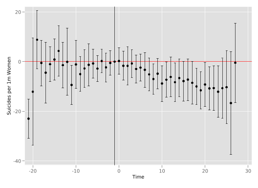
In the figure we see, in general, relatively flat trends in the lead up to the event of interest, and thereafter a reduction in rates of female suicide following the passage of no fault divorce laws.
To see how the interaction-weighted estimator proposed by Sun and Abraham (2021) accounts for time-varying treatment adoption, we will generate it “by hand” here. This estimator proposes to generate \(\widehat{v}_g\) for some period \(g\) of interest, where in this case \(g\) will refer to each lag and lead. Formally, \(\widehat{v}_g\) is defined as follows: \[ \widehat{v}_g = \frac{1}{|g|} \sum_{\ell \in g} \sum_{e} \widehat{\delta}_{e,\ell} \widehat{Pr} \left\{ E_i = e | E_i \in [-\ell , T - \ell] \right\}. \tag{2}\] Here \(E_i\) indicates the moment treatment is adopted for a unit \(i\), and \(\ell\) is the relative period to treatment at period \(t\), ie \(\ell = t - E_i\). Thus, \(\widehat{Pr} \left\{ E_i = e | E_i \in [-\ell , T - \ell] \right\}\) is the sample share of the cohort that receives the initial treatment at a time \(e\), \(g\) is a set of relative periods \(\ell \in [-T , T]\), and \(\widehat{\delta}_{e, \ell}\) is an estimate of the Cohort-specific Average Treatment effect on the Treated (\(CATT\)) for the cohort \(e\) at \(\ell\) periods from initial treatment \[\delta_{e,\ell} = CATT_{e, \ell} = E[Y_{i,e+\ell} - Y_{i,e+\ell}^{\infty} | E_i = e]\] Where \(Y_{i,t}\) is the outcome for unit \(i\) at time \(t\) and \(Y_{i,t}^{\infty}\) is the potential outcome for unit \(i\) at time \(t\) if never were treated. Sun and Abraham (2021) describe the estimation procedure of \(\widehat{v}_g\) as follows:
To fix ideas and get a hold on notation, in our example \(g = \{-21 , -20 , \cdots , 27\}\), as we are considering the full set of lags and leads \(\ell\) as part of \(g\). The years which a no fault divorce law was passed (\(e\)) are \(e \in \{1969 , 1970 , 1971 , 1972 , 1973 , 1974 , 1975 , 1976 , 1977 , 1980 , 1984 , 1985\}\)2. We will start by building a series of indicator variables for \(E_i\) as follows:
frame change default
levelsof _nfd, local(Cohorts)
foreach i of local Cohorts{
gen E`i' = (_nfd == `i')
}1969 1970 1971 1972 1973 1974 1975 1976 1977 1980 1984 1985You may wish to confirm each E1969 generated in this loop above contains a vector of 1s for all units which were first exposed to the policy in 1969, and so forth for other indicators.
If we return to (Equation 2), we can see that we are interested in estimating a full set of lags and leads for each adoption period \(e\). With this particular setup, we have 12 indicator variables drawn from \(e\), and if we consider all lags and leads in \(g\), we have 48 indicator variables3. Thus, from \(\displaystyle\sum_{e\neq C}\sum_{\ell\neq-1}\delta_{e, \ell} (\mathbf{1}\{ E_i = e\} \cdot D_{i,t}^{\ell})\) we have 576 indicator variables! To ilustrate this we build all the indicator variables for \(CATT_{e,\ell}\) with the respective name in order to make it clearer when we go forward where we will store each of the outputs of interest.
The variables CATT_e_l will consist of an indicator for each cohort and time to treatment, indicating whether an observation is in this particular group. Note, however, that some of these indicator variables will actually be entirely empty. This is because there are some cohorts that never experience some specific \(\ell\) relative to the period of treatment (eg early treatment adopters won’t have enough data prior to treatment to observe very long leads, and late treatment adopters won’t have enough post-treatment data to observe very long lags). In order to delete these indicators which exist in our dataset but not in practice, we can simply remove from the data those columns with 0 mean:
As we see here, we have now reduced the dimensionality of the indicator variables \(\displaystyle\sum_{e\neq C}\sum_{\ell\neq-1}\delta_{e, \ell} (\mathbf{1}\{ E_i = e\} \cdot D_{i,t}^{\ell})\) from 576 to 384, which are the full observable lags and leads for each treatment cohort. Now we can actually go about the business of estimating \(\delta_{e,\ell}\)!
This looks quite simple, and it is precisely because we have gone to all the work of generating all the dummies we need for our CATT groups. This, in essence, estimates an event study equivalent for each treatment adoption cohort. As there is many estimates here, we don’t show the full summary, but we can peruse the first 10 estimates for \(CATT_{e,\ell}\):
A[9,5]
CATT_E196~d5 CATT_E196~d4 CATT_E196~d3 CATT_E196~d2 CATT_E196~g0
b -5.9321853 -13.692265 -8.6263938 .0429568 3.4117525
se 4.0134225 8.8683515 4.7827127 3.9663334 7.5640948
t -1.4780864 -1.543947 -1.8036613 .01083036 .45104571
pvalue .145917 .12916913 .0775623 .99140368 .65398775
ll -14.001712 -31.523281 -18.242682 -7.9318911 -11.796879
ul 2.1373415 4.1387511 .98989454 8.0178047 18.620384
df 48 48 48 48 48
crit 2.0106348 2.0106348 2.0106348 2.0106348 2.0106348
eform 0 0 0 0 0To have a full idea of what we’ve just estimated here, we will re-organise these estimates to present the coefficient in the style of Table 3 of Sun and Abraham (2021). In particular, let’s display \(\ell\) values (lags and leads) in rows and \(e\) values in columns so we can observe our cohort-specific event studies in a column-wise fashion. We do this below, we first build a matrix deltas in which to store these estimates, then fill them in, before finally displaying the tabular output. Most of this code is actually relatively auxiliary, used to ensure that we can extract each lag and lead from regression results. To do this, we are using the command capture, as some of the combinations \(e,\ell\) doesn’t exist. It is worth working through this code carefully to confirm that you can see that in this way we grab each coefficient \(\widehat\delta_{e,\ell}\).
// Get unique cohorts and relative times
levelsof _nfd, local(Cohorts)
local n_cohorts = r(r)
levelsof timeToTreat, local(RelTimes)
local n_reltime = r(r)
// Create matrix to store estimates
matrix deltas = J(`n_reltime', `n_cohorts', .)
matrix rownames deltas = `RelTimes'
matrix colnames deltas = `Cohorts'
// Retrieve estimates
local col = 0
foreach e of varlist E*{
local col = `col' + 1
local row = 0
foreach l of varlist Lead* Lag*{
local row = `row' + 1
if "`l'" == "Lead1" matrix deltas[`row', `col'] = 0
cap matrix deltas[`row', `col'] = _b[CATT_`e'_`l']
if _rc != 111 matrix deltas[`row', `col'] = _b[CATT_`e'_`l']
}
}
// Display the matrix
matlist deltas, format(%04.1f)1969 1970 1971 1972 1973 1974 1975 1976 1977 1980 1984 1985
-21 -20 -19 -18 -17 -16 -15 -14 -13 -12 -11 -10 -9 -8 -7 -6 -5 -4 -3 -2 -1 0 1
> 2 3 4 5 6 7 8 9 10 11 12 13 14 15 16 17 18 19 20 21 22 23 24 25 26 27
| 1969 1970 1971 1972 1973 1974 1975 1976 1977 1980
-------------+------------------------------------------------------------
-21 | . . . . . . . . . .
-20 | . . . . . . . . . .
-19 | . . . . . . . . . .
-18 | . . . . . . . . . .
-17 | . . . . . . . . . .
-16 | . . . . . . . . . 07.2
-15 | . . . . . . . . . -2.3
-14 | . . . . . . . . . -1.2
-13 | . . . . . . . . -6.3 04.2
-12 | . . . . . . . 10.6 -1.5 06.1
-11 | . . . . . . -5.5 -8.8 -14.4 -0.6
-10 | . . . . . 05.4 11.0 -5.4 02.6 10.6
-9 | . . . . 01.0 -2.3 04.0 -7.2 -13.5 -0.6
-8 | . . . -1.0 -2.6 03.0 06.8 -5.6 -2.6 08.4
-7 | . . -0.6 -2.4 -3.9 04.9 13.3 -14.2 04.1 -5.8
-6 | . -6.6 -7.4 -0.1 02.5 -0.7 07.8 -1.8 01.6 00.5
-5 | -5.9 -8.9 -12.2 00.9 -1.9 03.1 02.5 -3.1 08.5 -5.4
-4 | -13.7 -4.0 -3.6 06.9 02.3 10.3 06.2 06.5 -1.4 02.7
-3 | -8.6 -0.6 -1.4 -1.4 01.7 00.4 -6.4 -30.7 -2.3 01.3
-2 | 00.0 -7.7 -2.3 -0.6 00.6 11.0 -3.7 15.4 -13.6 -0.9
-1 | 00.0 00.0 00.0 00.0 00.0 05.4 00.0 00.0 00.0 00.0
0 | 03.4 02.4 -9.3 -2.3 -0.0 02.2 -3.5 15.1 03.1 -7.5
1 | -6.1 -1.5 -10.4 -7.9 01.8 01.3 02.5 37.6 -11.9 -8.2
2 | -10.1 01.4 -14.0 -2.8 -0.8 -1.0 -4.8 10.1 -7.8 02.7
3 | 02.5 -17.2 03.3 -8.7 -0.0 -0.8 -5.8 02.3 -9.3 06.5
4 | 01.5 -14.8 -8.8 -4.1 -3.3 -0.3 -10.9 -1.7 -13.5 02.0
5 | 01.9 -19.5 -7.7 00.5 -6.1 01.4 -7.2 -6.6 -7.6 04.6
6 | -0.4 -22.6 -7.6 -11.5 -7.9 -4.1 -6.0 06.4 07.6 -3.1
7 | -8.2 -23.9 -13.7 -7.1 -13.0 -2.5 03.0 -0.2 -2.7 -3.6
8 | -5.3 -28.5 -17.2 -12.8 -9.0 06.1 -5.9 -5.5 -14.4 -5.1
9 | -7.3 -32.2 -19.2 -3.7 -2.2 04.5 12.5 04.8 -9.1 -0.7
10 | -8.4 -42.3 -18.6 01.0 -3.4 00.8 -5.6 -10.0 -20.6 00.2
11 | -10.4 -37.5 -7.2 -0.0 -9.5 04.0 02.0 00.7 -21.0 -0.9
12 | -5.9 -31.4 -8.2 -4.2 -6.9 06.9 05.3 -11.0 -8.2 01.4
13 | 03.7 -31.2 -9.0 -7.5 -8.3 -1.8 -7.3 01.6 -13.6 -0.3
14 | 09.4 -31.4 -9.2 03.9 -8.0 -0.4 00.9 -4.2 -21.5 -7.6
15 | -2.3 -32.0 -10.1 -8.5 -9.6 02.0 15.0 -11.4 -21.1 -1.6
16 | 04.1 -32.4 -9.5 -6.8 -8.8 02.0 08.4 -13.6 -16.0 -1.5
17 | -2.2 -33.8 -10.8 -5.8 -9.0 -4.8 06.6 -18.6 -10.2 .
18 | -2.8 -40.1 -14.5 -1.2 -11.0 00.2 07.1 -7.2 -23.6 .
19 | -6.0 -43.4 -11.2 -6.9 -11.9 -2.4 -3.7 -8.0 -15.3 .
20 | -2.5 -40.0 -11.2 -0.4 -9.0 -6.1 03.7 -9.1 . .
21 | -3.0 -44.8 -10.9 -10.5 -8.1 -6.8 -3.5 . . .
22 | -9.4 -41.3 -4.4 -10.7 -12.5 -6.7 . . . .
23 | 01.6 -41.7 -10.6 -12.2 -13.5 . . . . .
24 | 03.7 -48.4 -12.1 -7.8 . . . . . .
25 | -4.1 -47.3 -8.8 . . . . . . .
26 | -5.2 -44.7 . . . . . . . .
27 | 03.7 . . . . . . . . .
| 1984 1985
-------------+-----------
-21 | . -15.2
-20 | 02.4 -21.9
-19 | -1.0 18.9
-18 | -0.4 03.0
-17 | 02.4 -5.2
-16 | -3.1 04.5
-15 | -0.1 14.4
-14 | 03.6 19.1
-13 | -9.1 24.0
-12 | 00.1 -14.1
-11 | -9.6 00.4
-10 | -13.2 -8.5
-9 | -17.1 -3.7
-8 | -9.2 -13.6
-7 | -6.5 01.0
-6 | -7.7 -10.9
-5 | -12.8 -3.1
-4 | -17.5 -15.6
-3 | -11.9 06.5
-2 | -0.5 -1.3
-1 | 00.0 00.0
0 | -0.1 -0.3
1 | 02.8 01.4
2 | -3.3 14.2
3 | -7.2 -14.9
4 | -5.0 08.9
5 | -6.4 18.9
6 | -4.3 02.5
7 | -5.4 18.4
8 | -2.5 13.5
9 | -6.9 09.5
10 | -11.2 07.0
11 | -9.8 19.1
12 | -6.4 .
13 | . .
14 | . .
15 | . .
16 | . .
17 | . .
18 | . .
19 | . .
20 | . .
21 | . .
22 | . .
23 | . .
24 | . .
25 | . .
26 | . .
27 | . . Now, with \(\widehat\delta_{e,\ell}\) in hand, the only other thing we need are the weights of each cohort at the respective relative period. We could do this “by hand”, calculating from observations in our data, but it is likely easier to get these by regressing each cohort indicator variable \(\mathbf{1} \{ E_i = e \}\) on all the relative period indicator variables \(D^\ell_{i,t}\). This regression will just tell us the proportion of a specific lead or lag which are made up of observations from a particular cohort. We will do this below, storing weights in a matrix called w1:
// Get unique cohorts and relative times
levelsof _nfd, local(Cohorts)
local n_cohorts = r(r)
levelsof timeToTreat, local(RelTimes)
local n_reltime = r(r)
// Create matrix to store estimates
matrix w1 = J(`n_reltime', `n_cohorts', .)
matrix rownames w1 = `RelTimes'
matrix colnames w1 = `Cohorts'
// Retrieve estimates
local col = 0
foreach e of varlist E*{
local col = `col' + 1
qui reg `e' Lead21-Lead2 Lag*, nocons
local row = 0
foreach l of varlist Lead* Lag*{
local row = `row' + 1
if "`l'" == "Lead1" matrix w1[`row', `col'] = 0
if "`l'" == "Lead1" continue
cap matrix w1[`row', `col'] = _b[`l']
if _rc != 111 matrix w1[`row', `col'] = _b[`l']
if w1[`row', `col'] == 0 matrix w1[`row', `col'] = .
}
}1969 1970 1971 1972 1973 1974 1975 1976 1977 1980 1984 1985
-21 -20 -19 -18 -17 -16 -15 -14 -13 -12 -11 -10 -9 -8 -7 -6 -5 -4 -3 -2 -1 0 1
> 2 3 4 5 6 7 8 9 10 11 12 13 14 15 16 17 18 19 20 21 22 23 24 25 26 27We can display these weights in the same was as we documented the quantities \(\widehat\delta_{e,\ell}\) previously:
| 1969 1970 1971 1972 1973 1974 1975 1976 1977 1980
-------------+------------------------------------------------------------
-21 | . . . . . . . . . .
-20 | . . . . . . . . . .
-19 | . . . . . . . . . .
-18 | . . . . . . . . . .
-17 | . . . . . . . . . .
-16 | . . . . . . . . . 0.33
-15 | . . . . . . . . . 0.33
-14 | . . . . . . . . . 0.33
-13 | . . . . . . . . 0.50 0.17
-12 | . . . . . . . 0.14 0.43 0.14
-11 | . . . . . . 0.22 0.11 0.33 0.11
-10 | . . . . . 0.25 0.17 0.08 0.25 0.08
-9 | . . . . 0.45 0.14 0.09 0.05 0.14 0.05
-8 | . . . 0.12 0.40 0.12 0.08 0.04 0.12 0.04
-7 | . . 0.22 0.09 0.31 0.09 0.06 0.03 0.09 0.03
-6 | . 0.06 0.21 0.09 0.29 0.09 0.06 0.03 0.09 0.03
-5 | 0.06 0.06 0.19 0.08 0.28 0.08 0.06 0.03 0.08 0.03
-4 | 0.06 0.06 0.19 0.08 0.28 0.08 0.06 0.03 0.08 0.03
-3 | 0.06 0.06 0.19 0.08 0.28 0.08 0.06 0.03 0.08 0.03
-2 | 0.06 0.06 0.19 0.08 0.28 0.08 0.06 0.03 0.08 0.03
-1 | 0.00 0.00 0.00 0.00 0.00 0.00 0.00 0.00 0.00 0.00
0 | 0.06 0.06 0.19 0.08 0.28 0.08 0.06 0.03 0.08 0.03
1 | 0.06 0.06 0.19 0.08 0.28 0.08 0.06 0.03 0.08 0.03
2 | 0.06 0.06 0.19 0.08 0.28 0.08 0.06 0.03 0.08 0.03
3 | 0.06 0.06 0.19 0.08 0.28 0.08 0.06 0.03 0.08 0.03
4 | 0.06 0.06 0.19 0.08 0.28 0.08 0.06 0.03 0.08 0.03
5 | 0.06 0.06 0.19 0.08 0.28 0.08 0.06 0.03 0.08 0.03
6 | 0.06 0.06 0.19 0.08 0.28 0.08 0.06 0.03 0.08 0.03
7 | 0.06 0.06 0.19 0.08 0.28 0.08 0.06 0.03 0.08 0.03
8 | 0.06 0.06 0.19 0.08 0.28 0.08 0.06 0.03 0.08 0.03
9 | 0.06 0.06 0.19 0.08 0.28 0.08 0.06 0.03 0.08 0.03
10 | 0.06 0.06 0.19 0.08 0.28 0.08 0.06 0.03 0.08 0.03
11 | 0.06 0.06 0.19 0.08 0.28 0.08 0.06 0.03 0.08 0.03
12 | 0.06 0.06 0.20 0.09 0.29 0.09 0.06 0.03 0.09 0.03
13 | 0.06 0.06 0.21 0.09 0.29 0.09 0.06 0.03 0.09 0.03
14 | 0.06 0.06 0.21 0.09 0.29 0.09 0.06 0.03 0.09 0.03
15 | 0.06 0.06 0.21 0.09 0.29 0.09 0.06 0.03 0.09 0.03
16 | 0.06 0.06 0.21 0.09 0.29 0.09 0.06 0.03 0.09 0.03
17 | 0.06 0.06 0.21 0.09 0.30 0.09 0.06 0.03 0.09 .
18 | 0.06 0.06 0.21 0.09 0.30 0.09 0.06 0.03 0.09 .
19 | 0.06 0.06 0.21 0.09 0.30 0.09 0.06 0.03 0.09 .
20 | 0.07 0.07 0.23 0.10 0.33 0.10 0.07 0.03 . .
21 | 0.07 0.07 0.24 0.10 0.34 0.10 0.07 . . .
22 | 0.07 0.07 0.26 0.11 0.37 0.11 . . . .
23 | 0.08 0.08 0.29 0.13 0.42 . . . . .
24 | 0.14 0.14 0.50 0.21 . . . . . .
25 | 0.18 0.18 0.64 . . . . . . .
26 | 0.50 0.50 . . . . . . . .
27 | 1.00 . . . . . . . . .
| 1984 1985
-------------+-----------
-21 | . 1.00
-20 | 0.50 0.50
-19 | 0.50 0.50
-18 | 0.50 0.50
-17 | 0.50 0.50
-16 | 0.33 0.33
-15 | 0.33 0.33
-14 | 0.33 0.33
-13 | 0.17 0.17
-12 | 0.14 0.14
-11 | 0.11 0.11
-10 | 0.08 0.08
-9 | 0.05 0.05
-8 | 0.04 0.04
-7 | 0.03 0.03
-6 | 0.03 0.03
-5 | 0.03 0.03
-4 | 0.03 0.03
-3 | 0.03 0.03
-2 | 0.03 0.03
-1 | 0.00 0.00
0 | 0.03 0.03
1 | 0.03 0.03
2 | 0.03 0.03
3 | 0.03 0.03
4 | 0.03 0.03
5 | 0.03 0.03
6 | 0.03 0.03
7 | 0.03 0.03
8 | 0.03 0.03
9 | 0.03 0.03
10 | 0.03 0.03
11 | 0.03 0.03
12 | 0.03 .
13 | . .
14 | . .
15 | . .
16 | . .
17 | . .
18 | . .
19 | . .
20 | . .
21 | . .
22 | . .
23 | . .
24 | . .
25 | . .
26 | . .
27 | . . Now, finally, we can generate \(\widehat{v}_{\ell}\) for \(\ell = -21, \ldots, 27\) and compare this with the results of the standard Panel Event Study Model we documented above.
// Get unique cohorts and time to treatment
levelsof timeToTreat, local(RelTimes)
local n_reltime = r(r)
levelsof _nfd
local n_cohorts = r(r)
// Create matrix to store IW estimates
matrix coefs = J(`n_reltime', 1, .)
matrix rownames coefs = `RelTimes'
// Retrieve IW estimates
local row = 0
foreach l of varlist Lead* Lag*{
local row = `row' + 1
if "`l'" == "Lead1" matrix coefs[`row', 1] = 0
if "`l'" == "Lead1" continue
local suma = 0
forvalues i = 1/`n_cohorts'{
if deltas[`row', `i'] == . continue
local suma = `suma' + deltas[`row', `i'] * ws[`row', `i']
}
matrix coefs[`row', 1] = `suma'
}
// Display IW estimates
matlist coefs, format(%4.2f)-21 -20 -19 -18 -17 -16 -15 -14 -13 -12 -11 -10 -9 -8 -7 -6 -5 -4 -3 -2 -1 0 1
> 2 3 4 5 6 7 8 9 10 11 12 13 14 15 16 17 18 19 20 21 22 23 24 25 26 27
1969 1970 1971 1972 1973 1974 1975 1976 1977 1980 1984 1985
| c1
-------------+-----
-21 | -15.18
-20 | -9.75
-19 | 8.97
-18 | 1.31
-17 | -1.40
-16 | 2.85
-15 | 4.00
-14 | 7.18
-13 | 0.02
-12 | -0.28
-11 | -8.08
-10 | 2.46
-9 | -2.65
-8 | -1.37
-7 | -0.68
-6 | -1.23
-5 | -3.23
-4 | -0.06
-3 | -1.90
-2 | -0.85
-1 | 0.00
0 | -1.24
1 | -2.39
2 | -4.03
3 | -2.43
4 | -5.34
5 | -4.76
6 | -5.91
7 | -8.67
8 | -9.77
9 | -6.36
10 | -9.64
11 | -7.76
12 | -6.36
13 | -8.32
14 | -7.42
15 | -8.86
16 | -7.98
17 | -9.23
18 | -11.05
19 | -11.67
20 | -9.13
21 | -10.76
22 | -11.47
23 | -13.56
24 | -14.10
25 | -14.92
26 | -24.92
27 | 3.75 Scanning across coefficients, we can see that in this case, reassuringly, almost every coefficient at least keeps its sign, except for a few cases that weren’t statiscally significant in the Panel Event Study Model.
If we wanted to implement Sun and Abraham’s estimator entirely by hand we could, and all that is missing to do this is to generate standard errors to build the confidence intervals. Following Sun and Abraham (2021) we note that the variance of \(\widehat{v}_\ell\) can be written as follows4 \[\begin{align*} V \left( \widehat{v}_{\ell} \right) & = V \left( \sum_{e \in h^\ell} \widehat{Pr} \{ E_i = e | E_i \in h^\ell \} \cdot \widehat{\delta}_{e,\ell} \right) \\ & = \sum_{e \in h^\ell} \left( \widehat{Pr}\{ E_i = e | e \in h^\ell \} \right)^2 V \left( \widehat{\delta}_{e,\ell} \right) \\ & + \sum_{e_j \in h^\ell} \sum_{e_k \in h^\ell , e_k \neq e_j} 2 \widehat{Pr}\{ E_i = e_j | e_j \in h^\ell \} \widehat{Pr}\{ E_i = e_k | e_k \in h^\ell \} Cov \left( \widehat{\delta}_{e_j,\ell} , \widehat{\delta}_{e_k,\ell} \right) \\ & + \sum_{e \in h^\ell} \left( \widehat{\delta}_{e,\ell} \right)^2 V \left( \widehat{Pr}\{ E_i = e | e \in h^\ell \} \right) \\ & + \sum_{e_j \in h^\ell} \sum_{e_k \in h^\ell , e_k \neq e_j} 2 \widehat{\delta}_{e_j,\ell} \widehat{\delta}_{e_k,\ell} Cov \left( \widehat{Pr}\{ E_i = e_j | e_j \in h^\ell \} , \widehat{Pr}\{ E_i = e_k | e_k \in h^\ell \} \right) \end{align*}\] Where \(h^\ell\) is the set of cohorts that experience the relative period \(\ell\), variance and covariance of the \(CATT_{e,\ell}\) come from estimates of step 1 and, variance and covariance of the weights \(\widehat{Pr} \{ E_i = e | e \in h^\ell \}\) come from the regressions of \(\mathbf{1} \{ E_i = e \}\) on \(D^\ell_{i,t}\).
The key thing to see is that we could estimate this manually with the pieces we have already put together, and indeed, with the use of seemingly unrelated regression techniques it is possible to estimate the variance of \(\widehat{Pr}(\cdot)\) and \(\widehat\delta_{e\ell}\) in a single step. However, in practice we will likely prefer to use a canned routine which allows for the estimation of the interaction weighted estimator, as well as the corresponding variance-covariance matrix. To see that our process of “manually” buidling up Sun and Abraham’s estimator from its composite parts, and to additionally conduct inference in a direct way, we can use estimation routines such as eventstudyinteract command from the homonymous package in Stata (note that this package must be installed from the SSC, and also requires the package avar from the SSC). Below we do this, showing the point estimates recovered are identical to what we have done.
// Control units indicator variable
gen control = (_nfd == .)
// EventStudyInteract estimation
eventstudyinteract asmrs Lead21-Lead2 Lag*, cohort(_nfd) control_cohort(control) absorb(i.stfips i.year) covariates(pcinc asmrh cases) vce(cluster stfips)
// Store in matrix
matrix IW = (e(b_iw)[1, 1..20], 0, e(b_iw)[1, 21..48])'
matrix coefs = coefs, IW
matrix colnames coefs = "Manual" "EventStudyInteract"
// Display matrix
matlist coefs, format(%4.2f)(obs=1,188)
IW estimates for dynamic effects Number of obs = 1,617
Absorbing 2 HDFE groups F(387, 48) = .
Prob > F = .
R-squared = 0.7772
Adj R-squared = 0.6867
Root MSE = 10.9833
(Std. err. adjusted for 49 clusters in stfips)
------------------------------------------------------------------------------
| Robust
asmrs | Coefficient std. err. t P>|t| [95% conf. interval]
-------------+----------------------------------------------------------------
Lead21 | -15.17924 5.972126 -2.54 0.014 -27.187 -3.171472
Lead20 | -9.747197 9.750469 -1.00 0.322 -29.35183 9.857434
Lead19 | 8.970329 9.135669 0.98 0.331 -9.398164 27.33882
Lead18 | 1.306182 5.936725 0.22 0.827 -10.6304 13.24277
Lead17 | -1.395557 6.075844 -0.23 0.819 -13.61186 10.82075
Lead16 | 2.853145 5.515597 0.52 0.607 -8.236705 13.943
Lead15 | 4.003854 6.300929 0.64 0.528 -8.665012 16.67272
Lead14 | 7.17717 6.7008 1.07 0.289 -6.295692 20.65003
Lead13 | .01768 10.77236 0.00 0.999 -21.6416 21.67696
Lead12 | -.2765308 14.05042 -0.02 0.984 -28.52679 27.97373
Lead11 | -8.08043 8.700366 -0.93 0.358 -25.57369 9.412829
Lead10 | 2.4582 7.633934 0.32 0.749 -12.89085 17.80725
Lead9 | -2.646594 4.672341 -0.57 0.574 -12.04097 6.747778
Lead8 | -1.372203 5.13084 -0.27 0.790 -11.68845 8.944043
Lead7 | -.6832283 5.563011 -0.12 0.903 -11.86841 10.50195
Lead6 | -1.234961 3.877307 -0.32 0.751 -9.030809 6.560887
Lead5 | -3.233854 3.577823 -0.90 0.371 -10.42755 3.959841
Lead4 | -.0582787 3.193827 -0.02 0.986 -6.479898 6.363341
Lead3 | -1.904401 3.648838 -0.52 0.604 -9.240882 5.43208
Lead2 | -.8476702 3.261958 -0.26 0.796 -7.406277 5.710937
Lag0 | -1.239097 3.268832 -0.38 0.706 -7.811525 5.33333
Lag1 | -2.391881 3.285635 -0.73 0.470 -8.998092 4.21433
Lag2 | -4.025795 4.51001 -0.89 0.377 -13.09378 5.042188
Lag3 | -2.428617 3.245147 -0.75 0.458 -8.953422 4.096188
Lag4 | -5.33754 3.312576 -1.61 0.114 -11.99792 1.32284
Lag5 | -4.761575 3.014414 -1.58 0.121 -10.82246 1.299311
Lag6 | -5.91478 4.201155 -1.41 0.166 -14.36177 2.532208
Lag7 | -8.673843 3.938079 -2.20 0.032 -16.59188 -.7558044
Lag8 | -9.772251 3.918806 -2.49 0.016 -17.65154 -1.892964
Lag9 | -6.356257 4.101257 -1.55 0.128 -14.60239 1.889872
Lag10 | -9.637517 4.722495 -2.04 0.047 -19.13273 -.1423054
Lag11 | -7.75636 4.688918 -1.65 0.105 -17.18406 1.671341
Lag12 | -6.357267 5.118722 -1.24 0.220 -16.64915 3.934613
Lag13 | -8.323697 5.150656 -1.62 0.113 -18.67978 2.03239
Lag14 | -7.416642 5.128541 -1.45 0.155 -17.72827 2.894981
Lag15 | -8.856134 5.144467 -1.72 0.092 -19.19978 1.487509
Lag16 | -7.981226 5.255356 -1.52 0.135 -18.54783 2.585376
Lag17 | -9.229058 5.333678 -1.73 0.090 -19.95314 1.49502
Lag18 | -11.04654 4.783876 -2.31 0.025 -20.66516 -1.42791
Lag19 | -11.67414 4.457339 -2.62 0.012 -20.63622 -2.712057
Lag20 | -9.134798 4.899511 -1.86 0.068 -18.98593 .7163303
Lag21 | -10.75783 4.685416 -2.30 0.026 -20.17849 -1.337172
Lag22 | -11.46795 4.771531 -2.40 0.020 -21.06176 -1.874147
Lag23 | -13.55601 5.371674 -2.52 0.015 -24.35648 -2.755532
Lag24 | -14.0999 6.971087 -2.02 0.049 -28.11621 -.0835869
Lag25 | -14.91802 9.622559 -1.55 0.128 -34.26547 4.429435
Lag26 | -24.91695 17.46155 -1.43 0.160 -60.02574 10.19185
Lag27 | 3.746291 13.84241 0.27 0.788 -24.08575 31.57833
------------------------------------------------------------------------------
| Manu Even
-------------+-----------
-21 | -15.18 -15.18
-20 | -9.75 -9.75
-19 | 8.97 8.97
-18 | 1.31 1.31
-17 | -1.40 -1.40
-16 | 2.85 2.85
-15 | 4.00 4.00
-14 | 7.18 7.18
-13 | 0.02 0.02
-12 | -0.28 -0.28
-11 | -8.08 -8.08
-10 | 2.46 2.46
-9 | -2.65 -2.65
-8 | -1.37 -1.37
-7 | -0.68 -0.68
-6 | -1.23 -1.23
-5 | -3.23 -3.23
-4 | -0.06 -0.06
-3 | -1.90 -1.90
-2 | -0.85 -0.85
-1 | 0.00 0.00
0 | -1.24 -1.24
1 | -2.39 -2.39
2 | -4.03 -4.03
3 | -2.43 -2.43
4 | -5.34 -5.34
5 | -4.76 -4.76
6 | -5.91 -5.91
7 | -8.67 -8.67
8 | -9.77 -9.77
9 | -6.36 -6.36
10 | -9.64 -9.64
11 | -7.76 -7.76
12 | -6.36 -6.36
13 | -8.32 -8.32
14 | -7.42 -7.42
15 | -8.86 -8.86
16 | -7.98 -7.98
17 | -9.23 -9.23
18 | -11.05 -11.05
19 | -11.67 -11.67
20 | -9.13 -9.13
21 | -10.76 -10.76
22 | -11.47 -11.47
23 | -13.56 -13.56
24 | -14.10 -14.10
25 | -14.92 -14.92
26 | -24.92 -24.92
27 | 3.75 3.75 Finally, we plot the output along with its 95% confidence intervals to compare this with our original event study.
// Data frame for plot
frame change plot_df
// Include IW estimates and keep only one column
svmat coefs, names(col)
rename EventStudyInteract IW
drop Manual
// Matrix to store IW estimates variance
matrix IW_SE = (vecdiag(e(V_iw)[1..20,1..20]), 0, vecdiag(e(V_iw)[21..48,21..48]))'
matrix colnames IW_SE = "IW_SE"
// Include IW estimates standard erros in dataset
svmat IW_SE, names(col)
replace IW_SE = sqrt(IW_SE)
// Generate CI and move time
gen IW_UpperCI = IW + invnormal(0.975) * IW_SE
gen IW_LowerCI = IW + invnormal(0.025) * IW_SE
gen IW_Time = Time + 0.4
// Graph
twoway rcap UpperCI LowerCI Time, lcolor(black) ///
|| rcap IW_UpperCI IW_LowerCI IW_Time, lcolor(blue) ///
|| scatter Estimate Time, mcolor(black) ///
|| scatter IW IW_Time, mcolor(blue) ///
scheme(plottig) xline(-1, lcolor(black) lpattern(solid)) yline(0, lcolor(red) lpattern(solid)) ytitle("Suicides per 1m Women") xtitle(Time) legend(off)(48 real changes made)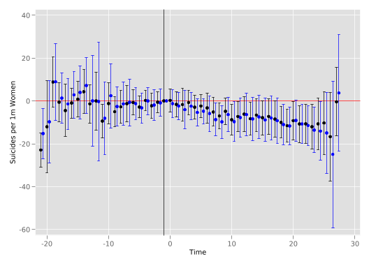
In this code call-out we return to the previous example in code call-out 4.3(a) where we review the interaction weighted estimator from Sun and Abraham (2021). However here, we now consider a range of frequently-used estimators which are used to estimate treatment effects in this setting, and which have desirable properties even in cases with heterogeneous treatment effects and staggered adoption designs. In particular, we will see how we can use packages provided by the authors or other developors to implement the treatment effects estimators proposed by Chaisemartin and D’Haultfœuille (2020), Callaway and Sant’Anna (2021), Borusyak, Jaravel, and Spiess (2024) as well as the estimator of Sun and Abraham (2021) seen previously. While in code call-out 4.3(a) we focused on showing each step of Sun and Abraham (2021), in this code call-out we simply focus on the comparison of each of the aforementioned estimators and their confidence intervals. Unlike the previous call out where we worked with 10 leads and 15 lags, here we will consider only 6 leads and 15 lags to avoid losing focus given large CIs at longer (pre-treatment) leads.
To begin we load the data from Stevenson and Wolfers (2006) which we worked with above and we destring the cohort variable:
(encoding automatically selected: ISO-8859-1)
(10 vars, 1,617 obs)
_nfd already numeric; no replaceWe will begin by using eventstudyinteract to implement Sun and Abraham (2021)’s interaction weighted estimator. As we have explored this previously, we will do this below simply implementing what we did previously, however noting that (as above) we need to generate the full set of leads and lags of interest, and we will generate our lags and leads to accumulate leads of greater than 6, and lags of greater than 15:
// Generate relative time to treatment
gen timeToTreat = year - _nfd
// Create leads and lags (start at -6, go to +15)
gen Lead6 = timeToTreat<=-6
foreach l of numlist 5(-1)2 {
gen Lead`l' = timeToTreat==-`l'
}
foreach l of numlist 0(1)14 {
gen Lag`l' = timeToTreat==`l'
}
gen Lag15 = timeToTreat>=15&timeToTreat!=.
// Generate control group identifier
gen control = (_nfd == .)
// Estimate S&A
qui eventstudyinteract asmrs Lead* Lag*, cohort(_nfd) ///
control_cohort(control) absorb(i.stfips i.year) ///
vce(cluster stfips)(429 missing values generated)We will visualise these effects after implementing the various estimators here, and so for now wish to store each of the grouped lag and lead terms and their standard errors. We do this below, noting that because period -1 is used as an omitted baseline reference period, we will store the series of 5 leads (-6 to -2), a 0 for period -1, and then 15 lags:
We can implemente a similar dynamic model capturing lags and lead’s following Chaisemartin and D’Haultfœuille (2020) using the command did_multiplegt_dyn, released by the authors along with a number of others. Note that here, the implementation is such that rather than indicating treatment cohorts, we simply indicate the variable which registers groups (in this case, states), as well as time periods (in this case, years), along with an indicator for the moment in which treatment switches on (post below).
-------------------------------------------------------------------------------
> -
Estimation of treatment effects: Event-study effects
-------------------------------------------------------------------------------
> -
| Estimate SE LB CI UB CI N
-------------+-------------------------------------------------------
Effect_1 | 1.209344 2.954956 -4.582263 7.00095 249
Effect_2 | -.8466386 3.035562 -6.79623 5.102953 217
Effect_3 | .9020593 4.322185 -7.569267 9.373386 188
Effect_4 | .2507572 3.772835 -7.143864 7.645378 165
Effect_5 | -.9848102 3.535422 -7.91411 5.94449 144
Effect_6 | -2.813901 3.681743 -10.02999 4.402183 133
Effect_7 | -3.02599 4.36796 -11.58704 5.535055 126
Effect_8 | -7.52021 4.017517 -15.3944 .3539784 120
Effect_9 | -6.654115 3.800881 -14.1037 .7954746 114
Effect_10 | -6.539459 3.600385 -13.59608 .5171666 111
Effect_11 | -8.64928 3.996109 -16.48151 -.8170502 108
Effect_12 | -8.652266 3.933868 -16.36251 -.9420269 105
Effect_13 | -7.62209 4.588809 -16.61599 1.37181 97
Effect_14 | -11.41654 4.536445 -20.30781 -2.525274 89
Effect_15 | -10.59312 4.363387 -19.14521 -2.041043 87
| Switchers
-------------+----------
Effect_1 | 36
Effect_2 | 36
Effect_3 | 36
Effect_4 | 36
Effect_5 | 36
Effect_6 | 36
Effect_7 | 36
Effect_8 | 36
Effect_9 | 36
Effect_10 | 36
Effect_11 | 36
Effect_12 | 36
Effect_13 | 35
Effect_14 | 34
Effect_15 | 34
-------------------------------------------------------------------------------
> -
Test of joint nullity of the effects : p-value = .00002549
-------------------------------------------------------------------------------
> -
Average cumulative (total) effect per treatment unit
-------------------------------------------------------------------------------
> -
| Estimate SE LB CI UB CI N
-------------+-------------------------------------------------------
Av_tot_eff | -4.812681 3.301526 -11.28355 1.658191 840
| Switch x Periods
-------------+---------------------
Av_tot_eff | 535
-------------------------------------------------------------------------------
> -
Average number of time periods over which a treatment's effect is accumulated =
> 7.9420561
-------------------------------------------------------------------------------
> -
Testing the parallel trends and no anticipation assumptions
-------------------------------------------------------------------------------
> -
| Estimate SE LB CI UB CI N
-------------+-------------------------------------------------------
Placebo_1 | .026563 2.942508 -5.740647 5.793773 249
Placebo_2 | -1.158381 3.106004 -7.246038 4.929276 217
Placebo_3 | 2.004353 2.571903 -3.036484 7.045189 188
Placebo_4 | -1.686959 3.338732 -8.230752 4.856835 165
Placebo_5 | -.7497836 3.709402 -8.020078 6.52051 125
Placebo_6 | -2.498236 5.775151 -13.81732 8.820852 103
| Switchers
-------------+----------
Placebo_1 | 36
Placebo_2 | 36
Placebo_3 | 36
Placebo_4 | 36
Placebo_5 | 34
Placebo_6 | 32
-------------------------------------------------------------------------------
> -
Test of joint nullity of the placebos : p-value = .45209745
The development of this package was funded by the European Union (ERC, REALLYCR
> EDIBLE,GA N°101043899).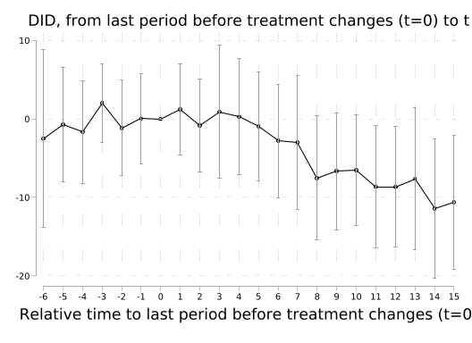
Once again, we will examine output graphically below when considering all of the estimators together (though we see that handily, the command above provides us with a graph allowing us to easily visualise placebo and treatment effects), and so for now we simply save each of the estimates and their variance for latter processing.
// Store
matrix dCDH = J(22, 2, .)
matrix colnames dCDH = "dCDH_b" "dCDH_v"
local rowcounter = 0
forvalues i = -6/15{
local rowcounter = `rowcounter' + 1
if `i' < 0 local ename "Placebo_`=abs(`i')'"
if `i' >= 0 local ename "Effect_`i'"
matrix define dCDH[`rowcounter', 1] = e(estimates)["`ename'",1]
matrix define dCDH[`rowcounter', 2] = e(variances)["`ename'",1]
}We can implemente the estimator of Callaway and Sant’Anna (2021) using the csdid package. As we will see below, this package allows for us to estimate each possible \(g,t\) estimtate (ie an estimate for each adoption period at each time period.) In this sense, arriving to the dynamic ‘event study’ estimates requires aggregating these \(g,t\) estimates using the post-estimation command estat event, which is designed to interact with csdid. Note here we create _nfd2 as csdid require never treated group have value of 0 instead of missing
// Prepare data
gen _nfd2 = _nfd
replace _nfd2 = 0 if _nfd == .
// Estimate
csdid asmrs, ivar(stfips) time(year) gvar(_nfd2) notyet
// Store
estat event, window(-6 15)(429 missing values generated)
(429 real changes made)
..................................................
..................................................
..................................................
..................................................
..................................................
..................................................
..................................................
..................................
Difference-in-difference with Multiple Time Periods
Number of obs = 1,617
Outcome model : regression adjustment
Treatment model: none
------------------------------------------------------------------------------
| Coefficient Std. err. z P>|z| [95% conf. interval]
-------------+----------------------------------------------------------------
g1969 |
t_1964_1965 | -4.72718 5.718247 -0.83 0.408 -15.93474 6.48038
t_1965_1966 | 5.418963 9.108848 0.59 0.552 -12.43405 23.27198
t_1966_1967 | 3.538308 4.875196 0.73 0.468 -6.0169 13.09352
t_1967_1968 | 2.519798 2.302555 1.09 0.274 -1.993127 7.032723
t_1968_1969 | 1.23071 5.587078 0.22 0.826 -9.719762 12.18118
t_1968_1970 | -8.509543 8.124396 -1.05 0.295 -24.43307 7.41398
t_1968_1971 | -11.83493 6.580675 -1.80 0.072 -24.73281 1.062958
t_1968_1972 | -2.250283 3.146151 -0.72 0.474 -8.416626 3.916059
t_1968_1973 | 1.665882 7.056447 0.24 0.813 -12.1645 15.49626
t_1968_1974 | -.0719305 4.435932 -0.02 0.987 -8.766197 8.622336
t_1968_1975 | -1.957562 4.133175 -0.47 0.636 -10.05844 6.143312
t_1968_1976 | -10.99293 4.065402 -2.70 0.007 -18.96097 -3.024885
t_1968_1977 | -5.730823 7.1981 -0.80 0.426 -19.83884 8.377193
t_1968_1978 | -8.493727 8.876709 -0.96 0.339 -25.89176 8.904304
t_1968_1979 | -9.706947 4.665022 -2.08 0.037 -18.85022 -.5636727
t_1968_1980 | -12.31629 4.657258 -2.64 0.008 -21.44435 -3.188231
t_1968_1981 | -7.205905 6.003591 -1.20 0.230 -18.97273 4.560917
t_1968_1982 | 1.490897 8.246051 0.18 0.857 -14.67107 17.65286
t_1968_1983 | 6.879339 8.326949 0.83 0.409 -9.441182 23.19986
t_1968_1984 | -4.135175 10.09151 -0.41 0.682 -23.91416 15.64381
t_1968_1985 | 2.086784 10.30218 0.20 0.839 -18.10511 22.27868
t_1968_1986 | -4.177353 8.761983 -0.48 0.634 -21.35052 12.99582
t_1968_1987 | -4.934822 7.619984 -0.65 0.517 -19.86972 10.00007
t_1968_1988 | -7.225142 6.583636 -1.10 0.272 -20.12883 5.678547
t_1968_1989 | -3.093842 7.002944 -0.44 0.659 -16.81936 10.63168
t_1968_1990 | -4.256953 7.47616 -0.57 0.569 -18.90996 10.39605
t_1968_1991 | -10.03793 6.251884 -1.61 0.108 -22.2914 2.215539
t_1968_1992 | 1.230997 3.560281 0.35 0.730 -5.747025 8.209019
t_1968_1993 | 2.918509 8.65568 0.34 0.736 -14.04631 19.88333
t_1968_1994 | -4.148357 7.455848 -0.56 0.578 -18.76155 10.46484
t_1968_1995 | -7.532714 10.07404 -0.75 0.455 -27.27747 12.21204
t_1968_1996 | 2.235679 10.99023 0.20 0.839 -19.30478 23.77614
-------------+----------------------------------------------------------------
g1970 |
t_1964_1965 | .1376844 3.993987 0.03 0.973 -7.690386 7.965755
t_1965_1966 | 4.795657 2.691312 1.78 0.075 -.4792164 10.07053
t_1966_1967 | -.4015758 3.37925 -0.12 0.905 -7.024785 6.221633
t_1967_1968 | -5.315211 7.815354 -0.68 0.496 -20.63302 10.0026
t_1968_1969 | 6.204781 3.784112 1.64 0.101 -1.211942 13.6215
t_1969_1970 | .5272802 3.372747 0.16 0.876 -6.083183 7.137744
t_1969_1971 | -1.243327 2.569883 -0.48 0.629 -6.280204 3.793551
t_1969_1972 | -.2100576 3.89741 -0.05 0.957 -7.848841 7.428726
t_1969_1973 | -14.14583 4.891337 -2.89 0.004 -23.73268 -4.55899
t_1969_1974 | -14.00407 3.172347 -4.41 0.000 -20.22176 -7.786384
t_1969_1975 | -16.31101 6.972278 -2.34 0.019 -29.97643 -2.645599
t_1969_1976 | -20.43852 5.896653 -3.47 0.001 -31.99575 -8.881295
t_1969_1977 | -22.4057 7.140527 -3.14 0.002 -36.40087 -8.410522
t_1969_1978 | -28.61081 13.71551 -2.09 0.037 -55.49272 -1.728893
t_1969_1979 | -31.23838 13.32373 -2.34 0.019 -57.35242 -5.124347
t_1969_1980 | -40.74241 13.97522 -2.92 0.004 -68.13333 -13.35148
t_1969_1981 | -35.9782 14.42139 -2.49 0.013 -64.2436 -7.712798
t_1969_1982 | -31.65932 11.90831 -2.66 0.008 -54.99918 -8.319466
t_1969_1983 | -29.95352 19.36759 -1.55 0.122 -67.91329 8.006252
t_1969_1984 | -30.10345 19.20868 -1.57 0.117 -67.75178 7.544881
t_1969_1985 | -31.63167 19.47128 -1.62 0.104 -69.79467 6.53134
t_1969_1986 | -32.27056 22.20251 -1.45 0.146 -75.78668 11.24556
t_1969_1987 | -33.77747 23.61111 -1.43 0.153 -80.05438 12.49945
t_1969_1988 | -39.44897 22.16721 -1.78 0.075 -82.8959 3.997972
t_1969_1989 | -43.04244 18.44227 -2.33 0.020 -79.18862 -6.896264
t_1969_1990 | -39.77485 20.63548 -1.93 0.054 -80.21964 .6699364
t_1969_1991 | -43.50762 21.08412 -2.06 0.039 -84.83175 -2.1835
t_1969_1992 | -40.52192 17.9361 -2.26 0.024 -75.67602 -5.367815
t_1969_1993 | -39.82428 22.43848 -1.77 0.076 -83.80288 4.154333
t_1969_1994 | -46.98566 18.62652 -2.52 0.012 -83.49297 -10.47834
t_1969_1995 | -46.55326 21.73763 -2.14 0.032 -89.15822 -3.948295
t_1969_1996 | -44.21783 22.21466 -1.99 0.047 -87.75776 -.6779059
-------------+----------------------------------------------------------------
g1971 |
t_1964_1965 | -5.586596 4.470643 -1.25 0.211 -14.3489 3.175704
t_1965_1966 | -4.9807 3.586128 -1.39 0.165 -12.00938 2.047982
t_1966_1967 | 5.715835 3.758015 1.52 0.128 -1.649738 13.08141
t_1967_1968 | 4.883778 2.867785 1.70 0.089 -.7369777 10.50453
t_1968_1969 | -3.351164 3.467077 -0.97 0.334 -10.14651 3.444182
t_1969_1970 | .656059 4.854509 0.14 0.892 -8.858604 10.17072
t_1970_1971 | -8.860995 5.918836 -1.50 0.134 -20.4617 2.73971
t_1970_1972 | -10.82598 6.705825 -1.61 0.106 -23.96916 2.317194
t_1970_1973 | -9.399127 6.988248 -1.34 0.179 -23.09584 4.297587
t_1970_1974 | 4.667371 4.594193 1.02 0.310 -4.337081 13.67182
t_1970_1975 | -4.037552 4.622658 -0.87 0.382 -13.0978 5.022692
t_1970_1976 | -4.218706 6.303087 -0.67 0.503 -16.57253 8.135119
t_1970_1977 | -5.037062 7.005237 -0.72 0.472 -18.76707 8.69295
t_1970_1978 | -12.01267 7.588118 -1.58 0.113 -26.88511 2.859766
t_1970_1979 | -14.42953 5.45663 -2.64 0.008 -25.12433 -3.73473
t_1970_1980 | -17.08024 5.349431 -3.19 0.001 -27.56494 -6.595552
t_1970_1981 | -16.23796 7.711034 -2.11 0.035 -31.3513 -1.124607
t_1970_1982 | -7.246876 7.077607 -1.02 0.306 -21.11873 6.624979
t_1970_1983 | -8.298141 5.920003 -1.40 0.161 -19.90113 3.304852
t_1970_1984 | -8.292513 7.317117 -1.13 0.257 -22.6338 6.048773
t_1970_1985 | -10.3323 8.064482 -1.28 0.200 -26.13839 5.473794
t_1970_1986 | -11.45878 6.558885 -1.75 0.081 -24.31395 1.396404
t_1970_1987 | -10.41209 9.729622 -1.07 0.285 -29.48179 8.657624
t_1970_1988 | -11.09732 7.913648 -1.40 0.161 -26.60779 4.413144
t_1970_1989 | -15.79724 6.983355 -2.26 0.024 -29.48436 -2.11011
t_1970_1990 | -12.96556 6.768248 -1.92 0.055 -26.23108 .2999655
t_1970_1991 | -12.32125 7.688198 -1.60 0.109 -27.38984 2.747341
t_1970_1992 | -13.11236 7.438109 -1.76 0.078 -27.69078 1.466069
t_1970_1993 | -6.067494 8.482254 -0.72 0.474 -22.69241 10.55742
t_1970_1994 | -12.19103 7.66702 -1.59 0.112 -27.21811 2.836054
t_1970_1995 | -14.52366 6.562556 -2.21 0.027 -27.38603 -1.661282
t_1970_1996 | -10.84939 8.601977 -1.26 0.207 -27.70895 6.010178
-------------+----------------------------------------------------------------
g1972 |
t_1964_1965 | -.4203921 2.449829 -0.17 0.864 -5.221969 4.381185
t_1965_1966 | 1.888768 4.926854 0.38 0.701 -7.767689 11.54522
t_1966_1967 | -1.483749 5.743952 -0.26 0.796 -12.74169 9.774189
t_1967_1968 | 8.806727 3.761312 2.34 0.019 1.434691 16.17876
t_1968_1969 | -9.734854 3.294499 -2.95 0.003 -16.19195 -3.277754
t_1969_1970 | -.2847769 2.059128 -0.14 0.890 -4.320593 3.75104
t_1970_1971 | 1.597951 2.804316 0.57 0.569 -3.898407 7.094309
t_1971_1972 | -4.499479 5.290375 -0.85 0.395 -14.86842 5.869465
t_1971_1973 | -4.760263 5.864074 -0.81 0.417 -16.25364 6.733111
t_1971_1974 | -1.399564 5.11365 -0.27 0.784 -11.42213 8.623006
t_1971_1975 | -4.836007 3.416567 -1.42 0.157 -11.53235 1.860341
t_1971_1976 | -3.05753 8.794812 -0.35 0.728 -20.29504 14.17999
t_1971_1977 | 1.036396 5.238923 0.20 0.843 -9.231704 11.3045
t_1971_1978 | -12.60561 5.566412 -2.26 0.024 -23.51558 -1.695645
t_1971_1979 | -6.39299 7.400296 -0.86 0.388 -20.8973 8.111323
t_1971_1980 | -10.85991 5.839575 -1.86 0.063 -22.30527 .5854423
t_1971_1981 | -3.000823 5.502085 -0.55 0.585 -13.78471 7.783066
t_1971_1982 | .5792787 5.998183 0.10 0.923 -11.17694 12.3355
t_1971_1983 | .1779607 7.281524 0.02 0.981 -14.09356 14.44949
t_1971_1984 | -3.446881 6.30425 -0.55 0.585 -15.80298 8.909221
t_1971_1985 | -7.846774 7.937131 -0.99 0.323 -23.40326 7.709717
t_1971_1986 | 3.514873 6.628117 0.53 0.596 -9.475997 16.50574
t_1971_1987 | -8.536306 6.490736 -1.32 0.188 -21.25792 4.185303
t_1971_1988 | -7.441139 6.022265 -1.24 0.217 -19.24456 4.362284
t_1971_1989 | -6.221511 6.679966 -0.93 0.352 -19.314 6.870981
t_1971_1990 | -1.445438 8.032695 -0.18 0.857 -17.18923 14.29835
t_1971_1991 | -7.749585 5.131196 -1.51 0.131 -17.80655 2.307375
t_1971_1992 | -.6587874 8.639613 -0.08 0.939 -17.59212 16.27454
t_1971_1993 | -10.60449 6.685361 -1.59 0.113 -23.70755 2.498581
t_1971_1994 | -11.88189 6.986635 -1.70 0.089 -25.57544 1.811664
t_1971_1995 | -12.65394 6.311296 -2.00 0.045 -25.02385 -.2840224
t_1971_1996 | -9.480132 6.198111 -1.53 0.126 -21.62821 2.667942
-------------+----------------------------------------------------------------
g1973 |
t_1964_1965 | -2.404733 4.079714 -0.59 0.556 -10.40082 5.591359
t_1965_1966 | -1.125717 5.111579 -0.22 0.826 -11.14423 8.892795
t_1966_1967 | 3.859849 7.631258 0.51 0.613 -11.09714 18.81684
t_1967_1968 | -1.784723 5.768902 -0.31 0.757 -13.09156 9.522116
t_1968_1969 | 2.256951 4.531738 0.50 0.618 -6.625093 11.13899
t_1969_1970 | -2.958684 4.678759 -0.63 0.527 -12.12888 6.211515
t_1970_1971 | .1816536 6.740854 0.03 0.979 -13.03018 13.39348
t_1971_1972 | -1.966166 6.788398 -0.29 0.772 -15.27118 11.33885
t_1972_1973 | 6.262085 6.275187 1.00 0.318 -6.037055 18.56122
t_1972_1974 | 5.074261 6.306164 0.80 0.421 -7.285593 17.43412
t_1972_1975 | 6.244536 9.404395 0.66 0.507 -12.18774 24.67681
t_1972_1976 | 4.334772 6.036314 0.72 0.473 -7.496187 16.16573
t_1972_1977 | -.0223953 5.060307 -0.00 0.996 -9.940414 9.895623
t_1972_1978 | -3.696835 5.17194 -0.71 0.475 -13.83365 6.439982
t_1972_1979 | -4.376171 6.78459 -0.65 0.519 -17.67372 8.921381
t_1972_1980 | -9.647731 6.733452 -1.43 0.152 -22.84505 3.549591
t_1972_1981 | -5.293813 6.710194 -0.79 0.430 -18.44555 7.857926
t_1972_1982 | -.3416598 6.702148 -0.05 0.959 -13.47763 12.79431
t_1972_1983 | -1.610319 5.574011 -0.29 0.773 -12.53518 9.314543
t_1972_1984 | -6.792157 6.87585 -0.99 0.323 -20.26858 6.684262
t_1972_1985 | -6.194206 7.090645 -0.87 0.382 -20.09162 7.703203
t_1972_1986 | -8.033994 5.105549 -1.57 0.116 -18.04069 1.972699
t_1972_1987 | -7.90303 7.267524 -1.09 0.277 -22.14712 6.341056
t_1972_1988 | -9.495209 8.363801 -1.14 0.256 -25.88796 6.897541
t_1972_1989 | -8.737679 6.507125 -1.34 0.179 -21.49141 4.016051
t_1972_1990 | -9.686021 5.874089 -1.65 0.099 -21.19902 1.826981
t_1972_1991 | -11.65547 6.175648 -1.89 0.059 -23.75952 .4485758
t_1972_1992 | -12.71122 5.688052 -2.23 0.025 -23.8596 -1.562848
t_1972_1993 | -10.14553 7.084886 -1.43 0.152 -24.03165 3.740592
t_1972_1994 | -8.429033 6.186076 -1.36 0.173 -20.55352 3.695453
t_1972_1995 | -14.04418 4.905088 -2.86 0.004 -23.65797 -4.43038
t_1972_1996 | -14.55125 6.270448 -2.32 0.020 -26.84111 -2.2614
-------------+----------------------------------------------------------------
g1974 |
t_1964_1965 | -7.854597 5.825499 -1.35 0.178 -19.27237 3.563171
t_1965_1966 | 5.449491 6.184055 0.88 0.378 -6.671034 17.57002
t_1966_1967 | -.1177994 3.399708 -0.03 0.972 -6.781104 6.545506
t_1967_1968 | -3.355287 5.074288 -0.66 0.508 -13.30071 6.590135
t_1968_1969 | 2.608943 2.513057 1.04 0.299 -2.316557 7.534444
t_1969_1970 | 5.042679 2.828933 1.78 0.075 -.5019285 10.58729
t_1970_1971 | -8.725296 2.814333 -3.10 0.002 -14.24129 -3.209305
t_1971_1972 | 9.475355 2.948607 3.21 0.001 3.696192 15.25452
t_1972_1973 | -5.685639 4.233952 -1.34 0.179 -13.98403 2.612755
t_1973_1974 | -.1363652 2.823384 -0.05 0.961 -5.670096 5.397365
t_1973_1975 | 1.593051 4.383253 0.36 0.716 -6.997967 10.18407
t_1973_1976 | -1.79894 3.737485 -0.48 0.630 -9.124277 5.526397
t_1973_1977 | -2.079912 5.268215 -0.39 0.693 -12.40542 8.245599
t_1973_1978 | -2.802432 5.164116 -0.54 0.587 -12.92391 7.31905
t_1973_1979 | .0595148 3.610123 0.02 0.987 -7.016197 7.135227
t_1973_1980 | -4.794048 4.704484 -1.02 0.308 -14.01467 4.426572
t_1973_1981 | -4.071742 4.755216 -0.86 0.392 -13.39179 5.248309
t_1973_1982 | 3.254498 4.932587 0.66 0.509 -6.413194 12.92219
t_1973_1983 | 2.249159 6.849957 0.33 0.743 -11.17651 15.67483
t_1973_1984 | -1.313281 5.867652 -0.22 0.823 -12.81367 10.1871
t_1973_1985 | 2.772642 6.933625 0.40 0.689 -10.81701 16.3623
t_1973_1986 | 5.902606 7.622874 0.77 0.439 -9.037952 20.84316
t_1973_1987 | -2.305391 8.154084 -0.28 0.777 -18.2871 13.67632
t_1973_1988 | -.3609368 8.028278 -0.04 0.964 -16.09607 15.3742
t_1973_1989 | 1.667877 7.171078 0.23 0.816 -12.38718 15.72293
t_1973_1990 | 1.137931 7.944904 0.14 0.886 -14.43379 16.70966
t_1973_1991 | -4.745821 6.490109 -0.73 0.465 -17.4662 7.974558
t_1973_1992 | -.849043 7.065287 -0.12 0.904 -14.69675 12.99867
t_1973_1993 | -3.513504 7.270273 -0.48 0.629 -17.76298 10.73597
t_1973_1994 | -6.812587 8.008726 -0.85 0.395 -22.5094 8.884228
t_1973_1995 | -8.283825 7.732611 -1.07 0.284 -23.43946 6.871813
t_1973_1996 | -7.88052 7.986252 -0.99 0.324 -23.53329 7.772246
-------------+----------------------------------------------------------------
g1975 |
t_1964_1965 | 18.09158 15.18185 1.19 0.233 -11.66429 47.84745
t_1965_1966 | -7.413181 6.408717 -1.16 0.247 -19.97403 5.147673
t_1966_1967 | 1.915155 3.544716 0.54 0.589 -5.032361 8.862671
t_1967_1968 | 8.765397 4.997273 1.75 0.079 -1.029077 18.55987
t_1968_1969 | -8.397036 8.368346 -1.00 0.316 -24.79869 8.004621
t_1969_1970 | -8.172197 5.723688 -1.43 0.153 -19.39042 3.046026
t_1970_1971 | 5.104827 8.347215 0.61 0.541 -11.25541 21.46507
t_1971_1972 | -15.89231 7.603434 -2.09 0.037 -30.79477 -.9898497
t_1972_1973 | 9.48493 5.896958 1.61 0.108 -2.072895 21.04275
t_1973_1974 | 1.251212 4.558883 0.27 0.784 -7.684034 10.18646
t_1974_1975 | -1.843844 2.358768 -0.78 0.434 -6.466944 2.779256
t_1974_1976 | 2.566002 4.602998 0.56 0.577 -6.455708 11.58771
t_1974_1977 | -3.538158 7.595447 -0.47 0.641 -18.42496 11.34865
t_1974_1978 | -5.466093 5.340923 -1.02 0.306 -15.93411 5.001924
t_1974_1979 | -10.96256 11.11076 -0.99 0.324 -32.73925 10.81414
t_1974_1980 | -7.480866 4.46527 -1.68 0.094 -16.23264 1.270903
t_1974_1981 | -4.26067 2.568771 -1.66 0.097 -9.295368 .7740273
t_1974_1982 | 2.517951 4.955003 0.51 0.611 -7.193676 12.22958
t_1974_1983 | -7.019813 7.449945 -0.94 0.346 -21.62144 7.581811
t_1974_1984 | 12.93302 7.053537 1.83 0.067 -.8916603 26.7577
t_1974_1985 | -4.982849 9.263475 -0.54 0.591 -23.13893 13.17323
t_1974_1986 | 2.479359 4.924555 0.50 0.615 -7.17259 12.13131
t_1974_1987 | 5.95899 4.931817 1.21 0.227 -3.707194 15.62517
t_1974_1988 | -7.898642 10.58864 -0.75 0.456 -28.65199 12.8547
t_1974_1989 | .2803353 3.646164 0.08 0.939 -6.866014 7.426685
t_1974_1990 | 13.87348 5.111014 2.71 0.007 3.856075 23.89088
t_1974_1991 | 6.985313 5.153714 1.36 0.175 -3.115781 17.08641
t_1974_1992 | 6.654773 3.703319 1.80 0.072 -.6035983 13.91314
t_1974_1993 | 6.185175 2.072416 2.98 0.003 2.123314 10.24704
t_1974_1994 | -3.933276 7.021974 -0.56 0.575 -17.69609 9.82954
t_1974_1995 | 3.266006 2.698516 1.21 0.226 -2.022987 8.555
t_1974_1996 | -3.678121 4.890674 -0.75 0.452 -13.26367 5.907423
-------------+----------------------------------------------------------------
g1976 |
t_1964_1965 | -17.44464 3.499918 -4.98 0.000 -24.30436 -10.58493
t_1965_1966 | .5728374 4.765668 0.12 0.904 -8.7677 9.913375
t_1966_1967 | -3.347883 3.53938 -0.95 0.344 -10.28494 3.589174
t_1967_1968 | 5.175174 3.004532 1.72 0.085 -.7136008 11.06395
t_1968_1969 | -11.05598 2.544451 -4.35 0.000 -16.04301 -6.068946
t_1969_1970 | 11.16668 2.369885 4.71 0.000 6.521787 15.81156
t_1970_1971 | -.476796 2.849491 -0.17 0.867 -6.061696 5.108104
t_1971_1972 | 6.5771 2.732582 2.41 0.016 1.221338 11.93286
t_1972_1973 | -30.25219 3.37395 -8.97 0.000 -36.86501 -23.63937
t_1973_1974 | 44.37363 2.047395 21.67 0.000 40.36081 48.38645
t_1974_1975 | -11.05001 2.292834 -4.82 0.000 -15.54388 -6.556136
t_1975_1976 | 11.19716 3.69525 3.03 0.002 3.954604 18.43972
t_1975_1977 | 37.39649 3.188912 11.73 0.000 31.14634 43.64664
t_1975_1978 | 8.387846 2.979751 2.81 0.005 2.547641 14.22805
t_1975_1979 | 2.315537 3.201625 0.72 0.470 -3.959534 8.590607
t_1975_1980 | -1.221957 3.358075 -0.36 0.716 -7.803664 5.359749
t_1975_1981 | -6.885232 3.273136 -2.10 0.035 -13.30046 -.4700036
t_1975_1982 | 2.175211 4.494083 0.48 0.628 -6.633031 10.98345
t_1975_1983 | -3.341596 5.444709 -0.61 0.539 -14.01303 7.329838
t_1975_1984 | -5.378098 4.572494 -1.18 0.240 -14.34002 3.583826
t_1975_1985 | 3.829647 6.608908 0.58 0.562 -9.123574 16.78287
t_1975_1986 | -11.2629 5.799901 -1.94 0.052 -22.63049 .1047004
t_1975_1987 | .2107359 4.601641 0.05 0.963 -8.808315 9.229787
t_1975_1988 | -14.56069 5.471638 -2.66 0.008 -25.28491 -3.836478
t_1975_1989 | -.716339 4.004661 -0.18 0.858 -8.56533 7.132652
t_1975_1990 | -6.636008 3.568713 -1.86 0.063 -13.63056 .3585417
t_1975_1991 | -13.8492 3.623627 -3.82 0.000 -20.95138 -6.747024
t_1975_1992 | -18.15239 4.597874 -3.95 0.000 -27.16406 -9.140724
t_1975_1993 | -21.18226 3.416381 -6.20 0.000 -27.87824 -14.48628
t_1975_1994 | -9.091136 4.764866 -1.91 0.056 -18.4301 .2478306
t_1975_1995 | -13.23682 4.077958 -3.25 0.001 -21.22947 -5.244173
t_1975_1996 | -11.49516 5.241315 -2.19 0.028 -21.76794 -1.222366
-------------+----------------------------------------------------------------
g1977 |
t_1964_1965 | 4.276345 10.7 0.40 0.689 -16.69526 25.24795
t_1965_1966 | -14.23467 9.000075 -1.58 0.114 -31.87449 3.405157
t_1966_1967 | 15.58043 6.983159 2.23 0.026 1.893693 29.26717
t_1967_1968 | -14.01479 11.54879 -1.21 0.225 -36.65 8.620423
t_1968_1969 | 13.33541 10.46121 1.27 0.202 -7.168178 33.83901
t_1969_1970 | 3.107172 5.520087 0.56 0.574 -7.712 13.92634
t_1970_1971 | .169226 9.626831 0.02 0.986 -18.69902 19.03747
t_1971_1972 | 4.534268 7.150784 0.63 0.526 -9.48101 18.54955
t_1972_1973 | -7.944176 5.849785 -1.36 0.174 -19.40954 3.521192
t_1973_1974 | -3.26182 5.830918 -0.56 0.576 -14.69021 8.166568
t_1974_1975 | -7.925198 4.005694 -1.98 0.048 -15.77621 -.0741819
t_1975_1976 | 8.099107 16.45577 0.49 0.623 -24.15361 40.35182
t_1976_1977 | 1.398961 16.60068 0.08 0.933 -31.13777 33.93569
t_1976_1978 | -14.84476 13.42739 -1.11 0.269 -41.16197 11.47245
t_1976_1979 | -7.039382 24.19749 -0.29 0.771 -54.46559 40.38682
t_1976_1980 | -9.619986 18.65769 -0.52 0.606 -46.18838 26.94841
t_1976_1981 | -11.61897 15.81482 -0.73 0.463 -42.61545 19.37751
t_1976_1982 | -7.195182 14.67734 -0.49 0.624 -35.96224 21.57187
t_1976_1983 | 7.054091 25.99794 0.27 0.786 -43.90093 58.00911
t_1976_1984 | -.2877703 19.7754 -0.01 0.988 -39.04685 38.47131
t_1976_1985 | -13.82813 15.67979 -0.88 0.378 -44.55996 16.90371
t_1976_1986 | -6.694527 12.54789 -0.53 0.594 -31.28793 17.89888
t_1976_1987 | -17.92035 21.31577 -0.84 0.401 -59.6985 23.8578
t_1976_1988 | -17.55911 16.32162 -1.08 0.282 -49.5489 14.43067
t_1976_1989 | -4.647312 24.85813 -0.19 0.852 -53.36835 44.07372
t_1976_1990 | -10.097 23.73651 -0.43 0.671 -56.61971 36.42571
t_1976_1991 | -17.6641 19.04559 -0.93 0.354 -54.99277 19.66458
t_1976_1992 | -20.27802 16.03709 -1.26 0.206 -51.71013 11.1541
t_1976_1993 | -11.95133 21.77707 -0.55 0.583 -54.63361 30.73096
t_1976_1994 | -8.675813 28.21007 -0.31 0.758 -63.96653 46.61491
t_1976_1995 | -24.03305 14.574 -1.65 0.099 -52.59756 4.531459
t_1976_1996 | -13.33833 16.95174 -0.79 0.431 -46.56313 19.88647
-------------+----------------------------------------------------------------
g1980 |
t_1964_1965 | -8.847829 3.883836 -2.28 0.023 -16.46001 -1.23565
t_1965_1966 | -1.580768 5.660452 -0.28 0.780 -12.67505 9.513515
t_1966_1967 | 6.22377 3.977889 1.56 0.118 -1.572749 14.02029
t_1967_1968 | 2.372353 2.678222 0.89 0.376 -2.876865 7.621572
t_1968_1969 | -7.327227 1.983905 -3.69 0.000 -11.21561 -3.438844
t_1969_1970 | 10.48373 2.73969 3.83 0.000 5.114033 15.85342
t_1970_1971 | -11.02888 3.025371 -3.65 0.000 -16.9585 -5.099262
t_1971_1972 | 8.161438 3.12734 2.61 0.009 2.031964 14.29091
t_1972_1973 | -10.67466 4.037558 -2.64 0.008 -18.58813 -2.761188
t_1973_1974 | 5.65682 2.303026 2.46 0.014 1.142972 10.17067
t_1974_1975 | -5.485015 2.68711 -2.04 0.041 -10.75165 -.218377
t_1975_1976 | 7.22707 3.240281 2.23 0.026 .876237 13.5779
t_1976_1977 | -2.188593 2.628055 -0.83 0.405 -7.339487 2.9623
t_1977_1978 | -2.685053 2.540676 -1.06 0.291 -7.664685 2.29458
t_1978_1979 | 1.294615 4.131915 0.31 0.754 -6.80379 9.39302
t_1979_1980 | -7.139356 3.99955 -1.79 0.074 -14.97833 .6996177
t_1979_1981 | -7.586212 2.763224 -2.75 0.006 -13.00203 -2.170393
t_1979_1982 | 1.397213 5.711895 0.24 0.807 -9.797896 12.59232
t_1979_1983 | 6.433175 4.850544 1.33 0.185 -3.073717 15.94007
t_1979_1984 | 3.290466 4.102354 0.80 0.422 -4.749999 11.33093
t_1979_1985 | 6.167182 4.968321 1.24 0.214 -3.570549 15.90491
t_1979_1986 | -1.580712 4.93325 -0.32 0.749 -11.2497 8.088281
t_1979_1987 | -2.362557 5.089412 -0.46 0.642 -12.33762 7.612508
t_1979_1988 | -3.752904 5.498999 -0.68 0.495 -14.53074 7.024936
t_1979_1989 | .4021561 3.530401 0.11 0.909 -6.517302 7.321615
t_1979_1990 | .7142494 3.475535 0.21 0.837 -6.097673 7.526172
t_1979_1991 | -.8062979 4.258009 -0.19 0.850 -9.151842 7.539246
t_1979_1992 | 1.300754 5.412371 0.24 0.810 -9.307299 11.90881
t_1979_1993 | -.3362123 3.380105 -0.10 0.921 -6.961097 6.288673
t_1979_1994 | -6.135439 3.770454 -1.63 0.104 -13.52539 1.254515
t_1979_1995 | -1.498527 3.787286 -0.40 0.692 -8.921472 5.924417
t_1979_1996 | -1.916881 4.894447 -0.39 0.695 -11.50982 7.676059
-------------+----------------------------------------------------------------
g1984 |
t_1964_1965 | -.8922195 4.160797 -0.21 0.830 -9.047233 7.262793
t_1965_1966 | -2.839842 6.061603 -0.47 0.639 -14.72037 9.040682
t_1966_1967 | 3.862887 4.253679 0.91 0.364 -4.474171 12.19995
t_1967_1968 | -3.622014 2.858617 -1.27 0.205 -9.224801 1.980774
t_1968_1969 | 1.839129 2.121821 0.87 0.386 -2.319564 5.997821
t_1969_1970 | 3.745434 2.923981 1.28 0.200 -1.985464 9.476332
t_1970_1971 | -13.97944 3.094597 -4.52 0.000 -20.04473 -7.914138
t_1971_1972 | 8.201817 3.302575 2.48 0.013 1.728889 14.67474
t_1972_1973 | -8.632504 4.284744 -2.01 0.044 -17.03045 -.2345601
t_1973_1974 | -4.339181 2.449292 -1.77 0.076 -9.139706 .4613443
t_1974_1975 | -3.85925 2.866703 -1.35 0.178 -9.477884 1.759384
t_1975_1976 | 10.21134 3.399467 3.00 0.003 3.548507 16.87417
t_1976_1977 | 2.212377 2.811631 0.79 0.431 -3.298319 7.723074
t_1977_1978 | -2.681896 2.715854 -0.99 0.323 -8.004872 2.64108
t_1978_1979 | -3.979407 4.418527 -0.90 0.368 -12.63956 4.680747
t_1979_1980 | -4.643065 4.273237 -1.09 0.277 -13.01846 3.732325
t_1980_1981 | 5.76547 3.750137 1.54 0.124 -1.584664 13.1156
t_1981_1982 | 10.00858 4.990257 2.01 0.045 .2278564 19.78931
t_1982_1983 | 1.680786 3.820094 0.44 0.660 -5.80646 9.168033
t_1983_1984 | -.0616197 3.309851 -0.02 0.985 -6.548808 6.425568
t_1983_1985 | 2.271938 2.106337 1.08 0.281 -1.856407 6.400284
t_1983_1986 | -4.397193 2.173115 -2.02 0.043 -8.65642 -.1379664
t_1983_1987 | -8.177799 4.826928 -1.69 0.090 -17.6384 1.282806
t_1983_1988 | -5.384308 4.32033 -1.25 0.213 -13.852 3.083382
t_1983_1989 | -7.011165 3.734852 -1.88 0.060 -14.33134 .3090106
t_1983_1990 | -5.269995 3.408802 -1.55 0.122 -11.95112 1.411133
t_1983_1991 | -5.678829 4.667349 -1.22 0.224 -14.82666 3.469006
t_1983_1992 | -4.092338 3.972039 -1.03 0.303 -11.87739 3.692715
t_1983_1993 | -6.839027 3.653352 -1.87 0.061 -13.99946 .3214108
t_1983_1994 | -11.98578 3.735617 -3.21 0.001 -19.30746 -4.664106
t_1983_1995 | -11.41605 3.586486 -3.18 0.001 -18.44543 -4.386666
t_1983_1996 | -8.248272 3.185912 -2.59 0.010 -14.49255 -2.003998
-------------+----------------------------------------------------------------
g1985 |
t_1964_1965 | -7.298953 4.448076 -1.64 0.101 -16.01702 1.419115
t_1965_1966 | 40.66414 5.790308 7.02 0.000 29.31534 52.01293
t_1966_1967 | -14.71362 4.449158 -3.31 0.001 -23.43381 -5.993428
t_1967_1968 | -7.444871 3.028645 -2.46 0.014 -13.38091 -1.508835
t_1968_1969 | 7.769419 2.211273 3.51 0.000 3.435404 12.10343
t_1969_1970 | 12.51931 3.009056 4.16 0.000 6.621668 18.41695
t_1970_1971 | .5036111 3.332433 0.15 0.880 -6.027838 7.035061
t_1971_1972 | 5.641099 3.531953 1.60 0.110 -1.281402 12.5636
t_1972_1973 | -39.44156 3.569969 -11.05 0.000 -46.43857 -32.44455
t_1973_1974 | 13.50194 2.44045 5.53 0.000 8.718742 18.28513
t_1974_1975 | -7.875904 3.031517 -2.60 0.009 -13.81757 -1.934241
t_1975_1976 | 8.708439 3.603605 2.42 0.016 1.645502 15.77138
t_1976_1977 | -10.85692 2.919005 -3.72 0.000 -16.57806 -5.135774
t_1977_1978 | 13.09936 2.758883 4.75 0.000 7.692044 18.50667
t_1978_1979 | -12.08146 4.673384 -2.59 0.010 -21.24112 -2.921797
t_1979_1980 | 9.312978 4.549876 2.05 0.041 .3953841 18.23057
t_1980_1981 | -11.58087 3.946322 -2.93 0.003 -19.31552 -3.846215
t_1981_1982 | 25.11741 5.04131 4.98 0.000 15.23662 34.99819
t_1982_1983 | -8.827697 4.061574 -2.17 0.030 -16.78824 -.8671579
t_1983_1984 | -2.78028 3.558492 -0.78 0.435 -9.754796 4.194235
t_1984_1985 | 3.18728 3.884611 0.82 0.412 -4.426419 10.80098
t_1984_1986 | 7.27322 2.336303 3.11 0.002 2.694149 11.85229
t_1984_1987 | 17.96404 1.997164 8.99 0.000 14.04967 21.87841
t_1984_1988 | -11.25039 2.043527 -5.51 0.000 -15.25563 -7.245146
t_1984_1989 | 12.19905 3.369139 3.62 0.000 5.595664 18.80244
t_1984_1990 | 20.60646 3.133836 6.58 0.000 14.46425 26.74866
t_1984_1991 | 5.511722 3.042211 1.81 0.070 -.450902 11.47435
t_1984_1992 | 18.85786 4.296732 4.39 0.000 10.43642 27.2793
t_1984_1993 | 15.10645 2.816225 5.36 0.000 9.586746 20.62614
t_1984_1994 | 11.60051 3.09458 3.75 0.000 5.535244 17.66578
t_1984_1995 | 8.138771 2.957511 2.75 0.006 2.342157 13.93539
t_1984_1996 | 20.07149 4.793312 4.19 0.000 10.67677 29.46621
------------------------------------------------------------------------------
Control: Not yet Treated
See Callaway and Sant'Anna (2021) for details
ATT by Periods Before and After treatment
Event Study:Dynamic effects
------------------------------------------------------------------------------
| Coefficient Std. err. z P>|z| [95% conf. interval]
-------------+----------------------------------------------------------------
Pre_avg | -.121249 .6236893 -0.19 0.846 -1.343658 1.10116
Post_avg | -5.124682 3.107494 -1.65 0.099 -11.21526 .9658939
Tm6 | -.5979217 3.088229 -0.19 0.846 -6.650739 5.454896
Tm5 | -1.542088 2.040403 -0.76 0.450 -5.541204 2.457027
Tm4 | 2.450636 1.78715 1.37 0.170 -1.052114 5.953386
Tm3 | -2.329835 2.229293 -1.05 0.296 -6.699168 2.039499
Tm2 | 1.123335 2.692991 0.42 0.677 -4.154831 6.4015
Tm1 | .1683806 2.666337 0.06 0.950 -5.057544 5.394306
Tp0 | -.0584725 2.815273 -0.02 0.983 -5.576307 5.459362
Tp1 | -1.502596 2.99517 -0.50 0.616 -7.373021 4.367829
Tp2 | -1.163238 3.984744 -0.29 0.770 -8.973193 6.646717
Tp3 | -.7775636 3.004831 -0.26 0.796 -6.666925 5.111798
Tp4 | -3.295607 3.004651 -1.10 0.273 -9.184614 2.5934
Tp5 | -3.323541 3.043139 -1.09 0.275 -9.287983 2.640901
Tp6 | -4.514865 3.707977 -1.22 0.223 -11.78237 2.752637
Tp7 | -7.419722 3.610322 -2.06 0.040 -14.49582 -.3436209
Tp8 | -8.307923 3.537392 -2.35 0.019 -15.24108 -1.374762
Tp9 | -5.275605 3.646348 -1.45 0.148 -12.42232 1.871106
Tp10 | -8.638666 4.096781 -2.11 0.035 -16.66821 -.6091234
Tp11 | -6.8346 4.280944 -1.60 0.110 -15.2251 1.555895
Tp12 | -6.112129 4.48348 -1.36 0.173 -14.89959 2.67533
Tp13 | -8.026768 4.613517 -1.74 0.082 -17.0691 1.01556
Tp14 | -7.457232 4.698351 -1.59 0.112 -16.66583 1.751367
Tp15 | -9.286391 4.737036 -1.96 0.050 -18.57081 -.0019717
------------------------------------------------------------------------------Once again, we can store the output of this command in a matrix for processing below.
Finally, we implement Borusyak, Jaravel, and Spiess (2024)’s imputation estimator using the command written by the authors: did_imputation. This requires the original group adoption variable _nfd with missing data for never treated groups, and we indicate post treatment periods with the horizons option, and placebo estimates described in Borusyak, Jaravel, and Spiess (2024) with pretrends.
Number of obs = 1,343
------------------------------------------------------------------------------
asmrs | Coefficient Std. err. z P>|z| [95% conf. interval]
-------------+----------------------------------------------------------------
tau0 | .0245945 1.773557 0.01 0.989 -3.451514 3.500703
tau1 | -1.302835 1.862784 -0.70 0.484 -4.953824 2.348153
tau2 | -1.4827 2.653062 -0.56 0.576 -6.682607 3.717206
tau3 | -.7835033 2.590851 -0.30 0.762 -5.861479 4.294472
tau4 | -2.925361 2.615227 -1.12 0.263 -8.051112 2.20039
tau5 | -2.896336 2.127236 -1.36 0.173 -7.065642 1.27297
tau6 | -3.900959 2.930106 -1.33 0.183 -9.643861 1.841943
tau7 | -6.709103 2.361189 -2.84 0.004 -11.33695 -2.081258
tau8 | -7.736853 3.135816 -2.47 0.014 -13.88294 -1.590767
tau9 | -4.661366 2.962819 -1.57 0.116 -10.46838 1.145652
tau10 | -8.067137 3.407498 -2.37 0.018 -14.74571 -1.388564
tau11 | -6.264161 3.698849 -1.69 0.090 -13.51377 .9854498
tau12 | -5.066231 4.356869 -1.16 0.245 -13.60554 3.473075
tau13 | -6.877423 4.218824 -1.63 0.103 -15.14617 1.391321
tau14 | -6.02391 4.038281 -1.49 0.136 -13.9388 1.890976
tau15 | -7.814651 4.380923 -1.78 0.074 -16.4011 .7718005
pre1 | -.7714264 3.751205 -0.21 0.837 -8.123654 6.580801
pre2 | -.9491779 2.883788 -0.33 0.742 -6.601298 4.702942
pre3 | -2.186564 2.699994 -0.81 0.418 -7.478456 3.105327
pre4 | .2132822 2.581568 0.08 0.934 -4.846499 5.273063
pre5 | -2.363125 2.311236 -1.02 0.307 -6.893064 2.166814
pre6 | -.5171265 2.550278 -0.20 0.839 -5.51558 4.481326
------------------------------------------------------------------------------We then save the resulting point estimates and variance terms in a matrix for graphing below.
* Store
matrix BJS = J(22, 2, .)
matrix colnames BJS = "BJS_b" "BJS_v"
local rowcounter = 0
forvalues i = -6/15{
local rowcounter = `rowcounter' + 1
if `i' < 0 local ename "pre`=abs(`i')'"
if `i' >= 0 local ename "tau`i'"
matrix define BJS[`rowcounter', 1] = e(b)[1,"`ename'"]
matrix define BJS[`rowcounter', 2] = e(V)["`ename'","`ename'"]
}Finally we will plot all the resulting estimates and their confidence intervals on a single plot. Note that there are packages to do this if desired, however we can easily enough do it “by hand” as we see below. Here we first import each of the matrices with the point estimates and variance terms, and then generate the 95% CIs based on the variance terms. Finally, we plot these on a common axis, noting that in the interests of visualisation, we shift treat treatment time around the relevant period allowing for some separation between each estimate.
// Clear Memory
clear
// Set observations
set obs 22
// Generate time to treatment
gen time = _n - 7
// Assign stored estimates and variances
svmat SA, names(col)
svmat dCDH, names(col)
svmat CS, names(col)
svmat BJS, names(col)
// Create lower and upper bounds for convidence intervals
foreach estimator in SA dCDH CS BJS{
gen `estimator'_UpperCI = `estimator'_b + invnormal(0.975) * sqrt(`estimator'_v)
gen `estimator'_LowerCI = `estimator'_b + invnormal(0.025) * sqrt(`estimator'_v)
}
// Displace times
gen SA_time = time - 0.2
gen dCDH_time = time - 0.1
gen CS_time = time + 0.1
gen BJS_time = time + 0.2
// Plot all
twoway rcap SA_UpperCI SA_LowerCI SA_time, lcolor(cranberry) ///
|| rcap dCDH_UpperCI dCDH_LowerCI dCDH_time, lcolor(navy) ///
|| rcap CS_UpperCI CS_LowerCI CS_time, lcolor(forest_green) ///
|| rcap BJS_UpperCI BJS_LowerCI BJS_time, lcolor(dkorange) ///
|| scatter SA_b SA_time, msymbol(O) mcolor(cranberry) ///
|| scatter dCDH_b dCDH_time, msymbol(Dh) mcolor(navy) ///
|| scatter CS_b CS_time, msymbol(Th) mcolor(forest_green) ///
|| scatter BJS_b BJS_time, msymbol(Sh) mcolor(dkorange) ///
scheme(plottig) xline(-1, lcolor(red) lpattern(dash)) ///
yline(0, lcolor(black) lpattern(solid)) ytitle("ATT") xtitle("Time To Treatment") ///
title("Event study estimators in Stevenson & Wolfers (2006)", size(medlarge)) ///
legend(order(5 "Sun & Abraham" 6 "de Chaisemartin & D'Haultfoeuille" ///
7 "Callaway & Sant'Anna" 8 "Borusyak et al.") rows(2) pos(6))Number of observations (_N) was 0, now 22.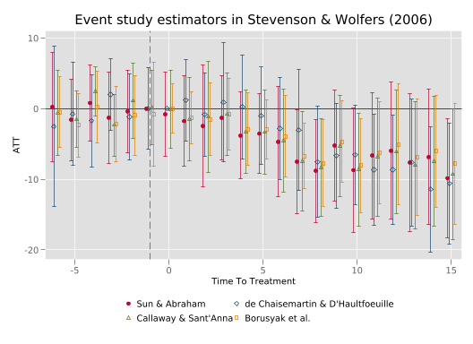
In this particular case, we see that the resulting estimates and CIs are quite similar, suggesting that (in this case), the difference between assumptions and aggregations in each case are minor in practice. Because estimators consider different time periods and the precise nature of parallel trends assumptions varies, we need not see that estimates are always so quantiatively similar, though it is, of course, reassuring to see when findings are robust to alternative reasonable estimators.
In this code call out, we will explore the use of synthetic control methods as well as extensions into synthetic difference-in-differences with the data using in the original Abadie, Diamond, and Hainmueller (2010) paper. In particular, these data provide a balanced sample from 39 states in the United States covering the period of 1970 to 2000. In particular, the interest in these methods is estimating the impact of the passage of Proposition 99, which was a reform to increase the sales tax paid per package of cigarettes sold in California.
We will begin by opening the data used by Abadie, Diamond, and Hainmueller (2010), and checking the variables available. If we wished we could confirm that this is effectively a balanced panel by tabulating (tab) the variable year and state.
(Tobacco Sales in 39 US States)
Contains data from data/Abadie_et_al_2010.dta
Observations: 1,209 Tobacco Sales in 39 US States
Variables: 7 11 Nov 2007 23:38
-------------------------------------------------------------------------------
Variable Storage Display Value
name type format label Variable label
-------------------------------------------------------------------------------
state long %14.0g state state no
year float %9.0g year
cigsale float %9.0g cigarette sale per capita (in
packs)
lnincome float %9.0g log state per capita gdp
beer float %9.0g beer consumption per capita
age15to24 float %9.0g percent of state population aged
15-24 years
retprice float %9.0g retail price of cigarettes
-------------------------------------------------------------------------------
Sorted by: yearHere our outcome of interest will be the variable cigsale which records the number of packages sold per capita in each state. The proposition 99 reform was passed in 1989, and we will thus consider 1970-1988 as the pre-period, while the period of 1989-2000 is the treatment period. While Abadie, Diamond, and Hainmueller (2010) actually construct their synthetic control considering both certain pre-period realisations as well as control variables included in their data, we will follow suggestions from Ferman, Pinto, and Possebom (2020) and document a case where we simply use the full set of pre-treatment realisations of the outcome of interest to generate our synthetic control. We will do this below, noting that the state variable in these data uses Stata FIPS codes, and so California corresponds to state 3. The below code assumes that the synth routine is installed, which is available from Stata’s SSC.
// Set the data as panel data with 'state' as the panel unit and 'year' as the time variable
tsset state year
synth cigsale cigsale(1970) cigsale(1971) cigsale(1972) cigsale(1973) ///
cigsale(1974) cigsale(1975) cigsale(1976) cigsale(1977) ///
cigsale(1978) cigsale(1979) cigsale(1980) cigsale(1981) ///
cigsale(1982) cigsale(1983) cigsale(1984) cigsale(1985) ///
cigsale(1986) cigsale(1987) cigsale(1988), ///
trunit(3) trperiod(1989) keep(synth_results) replace
Panel variable: state (strongly balanced)
Time variable: year, 1970 to 2000
Delta: 1 unit
-------------------------------------------------------------------------------
Synthetic Control Method for Comparative Case Studies
-------------------------------------------------------------------------------
First Step: Data Setup
-------------------------------------------------------------------------------
-------------------------------------------------------------------------------
Data Setup successful
-------------------------------------------------------------------------------
Treated Unit: California
Control Units: Alabama, Arkansas, Colorado, Connecticut,
Delaware, Georgia, Idaho, Illinois, Indiana,
Iowa, Kansas, Kentucky, Louisiana, Maine,
Minnesota, Mississippi, Missouri, Montana,
Nebraska, Nevada, New Hampshire, New Mexico,
North Carolina, North Dakota, Ohio, Oklahoma,
Pennsylvania, Rhode Island, South Carolina, South
Dakota, Tennessee, Texas, Utah, Vermont,
Virginia, West Virginia, Wisconsin, Wyoming
-------------------------------------------------------------------------------
Dependent Variable: cigsale
MSPE minimized for periods: 1970 1971 1972 1973 1974 1975 1976 1977 1978 1979
1980 1981 1982 1983 1984 1985 1986 1987 1988
Results obtained for periods: 1970 1971 1972 1973 1974 1975 1976 1977 1978 1979
1980 1981 1982 1983 1984 1985 1986 1987 1988 1989
1990 1991 1992 1993 1994 1995 1996 1997 1998 1999
2000
-------------------------------------------------------------------------------
Predictors: cigsale(1970) cigsale(1971) cigsale(1972)
cigsale(1973) cigsale(1974) cigsale(1975)
cigsale(1976) cigsale(1977) cigsale(1978)
cigsale(1979) cigsale(1980) cigsale(1981)
cigsale(1982) cigsale(1983) cigsale(1984)
cigsale(1985) cigsale(1986) cigsale(1987)
cigsale(1988)
-------------------------------------------------------------------------------
Unless period is specified
predictors are averaged over: 1970 1971 1972 1973 1974 1975 1976 1977 1978 1979
1980 1981 1982 1983 1984 1985 1986 1987 1988
-------------------------------------------------------------------------------
Second Step: Run Optimization
-------------------------------------------------------------------------------
-------------------------------------------------------------------------------
Optimization done
-------------------------------------------------------------------------------
Third Step: Obtain Results
-------------------------------------------------------------------------------
Loss: Root Mean Squared Prediction Error
---------------------
RMSPE | 1.6564
---------------------
-------------------------------------------------------------------------------
Unit Weights:
----------------------------
Co_No | Unit_Weight
---------------+------------
Alabama | 0
Arkansas | 0
Colorado | .015
Connecticut | .109
Delaware | 0
Georgia | 0
Idaho | 0
Illinois | 0
Indiana | 0
Iowa | 0
Kansas | 0
Kentucky | 0
Louisiana | 0
Maine | 0
Minnesota | 0
Mississippi | 0
Missouri | 0
Montana | .232
Nebraska | 0
Nevada | .205
New Hampshire | .045
New Mexico | 0
North Carolina | 0
North Dakota | 0
Ohio | 0
Oklahoma | 0
Pennsylvania | 0
Rhode Island | 0
South Carolina | 0
South Dakota | 0
Tennessee | 0
Texas | 0
Utah | .394
Vermont | 0
Virginia | 0
West Virginia | 0
Wisconsin | 0
Wyoming | 0
----------------------------
-------------------------------------------------------------------------------
Predictor Balance:
------------------------------------------------------
| Treated Synthetic
-------------------------------+----------------------
cigsale(1970) | 123 117.3614
cigsale(1971) | 121 119.7564
cigsale(1972) | 123.5 124.5763
cigsale(1973) | 124.4 124.3053
cigsale(1974) | 126.7 126.4153
cigsale(1975) | 127.1 126.7159
cigsale(1976) | 128 128.4025
cigsale(1977) | 126.4 126.6217
cigsale(1978) | 126.1 126.0853
cigsale(1979) | 121.9 122.8776
cigsale(1980) | 120.2 120.1817
cigsale(1981) | 118.6 119.6467
cigsale(1982) | 115.4 116.4915
cigsale(1983) | 110.8 110.9973
cigsale(1984) | 104.8 103.4059
cigsale(1985) | 102.8 103.1442
cigsale(1986) | 99.7 99.5867
cigsale(1987) | 97.5 100.4232
cigsale(1988) | 90.1 91.9269
------------------------------------------------------
-------------------------------------------------------------------------------You may note a number of things with the way that we have implemented synth above. The first is that the way we have entered the covariates on which to match (pre-treatment lags of the sales variable) is very cumbersome. It turns out that this is required if we do indeed wish to match on the variable at each pre-treatment period. While the syntax cigsale(1970(1)1988) would also be valid, it is not what we are after, as this would match on mean sales across the whole period, rather than sales in each pre-treatment period. A second thing to note is that there is substantial output both in terms of the data setup, the root mean square prediction error across all variables used in the match, and the resulting weights and predictor balances. From this we can see (for example), that the synthetic control for California is constructed using a combination of Colorado, Connecticut, Montana, Nevada, New Hampshire, and Utah. In the above implementation we have saved a dataset called synth_results which we can use to consider how the resulting synthetic control compares with California. The nature of the variables generated in this dataset are contained in the help file from synth. We will generate this graphical output below, starting with the synth_results dataset.
use synth_results.dta, clear
tsset _time
// Create the graph with a dotted line at the treatment period
set scheme plotplainblind
twoway tsline _Y_treated _Y_synthetic, lcolor(blue red) lwidth(thick thick) ///
legend(order(1 "California" 2 "Synthetic California") pos(1) ring(0)) ///
xline(1989) ytitle("Cigarette Sales") xtitle("Year")(Tobacco Sales in 39 US States)
Time variable: _time, 1970 to 2000
Delta: 1 unit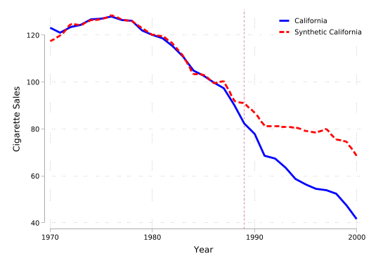
Here we can see that (as expected) the synthetic control and California follow a very similar trend up to the period in which treatment is applied. This comes precisely from the optimisation procedure, which seeks to construct a synthetic control which minimises this distance. However, we observe that outcomes then diverge between California and the synthetic control in the post-reform period, with a substantially larger decline in California. If we wished to formally conduct hypothesis tests related to this synthetic control procedure, we could conduct the permutation inference procedures laid out in Abadie, Diamond, and Hainmueller (2010) and discussed in Chapter 4. While we will not set this up here it is a worthwhile activity to understand the practicalities of inference. We will also consider below extensions of these methods into synthetic difference-in-differences, additionally documenting inference following permutation procedures.
We will do this using the sdid library. This implements the synthetic difference-in-differences estimator of Arkhangelsky et al. (2021). In this case, using the same data as above, we can calculate the ATT which reports mean declines between treated and synthetic control units across all post-treatment periods based on a synthetic difference-in-differences comparison. We will see this below, where sdid is used with the outcome as the first argument, followed by group and period variables, and finally the treatment indicator. A number of graphing options are indicated, and vce(placebo) requests the permutation-style inference laid out in Arkhangelsky et al. (2021). This permutation inference simply consists of recalculating the ATT for each alternative non-treated unit from among all other non-treated units, and calculates the standard error as the standard deviation of these ATTs (refer to further discussion in Section 4.6.1.3 of the book).
Placebo replications (50). This may take some time.
----+--- 1 ---+--- 2 ---+--- 3 ---+--- 4 ---+--- 5
.................................................. 50
Synthetic Difference-in-Differences Estimator
-----------------------------------------------------------------------------
cigsale | ATT Std. Err. t P>|t| [95% Conf. Interval]
-------------+---------------------------------------------------------------
treated | -15.60383 7.63648 -2.04 0.041 -30.57105 -0.63661
-----------------------------------------------------------------------------
95% CIs and p-values are based on large-sample approximations.
Refer to Arkhangelsky et al., (2021) for theoretical derivations.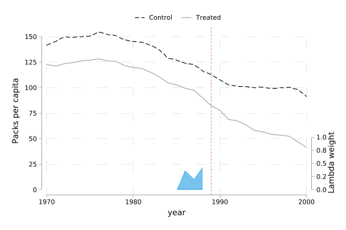
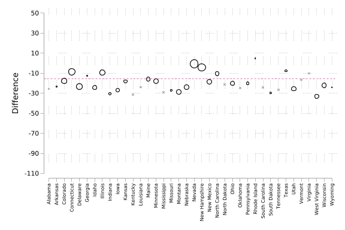
The standard output of this command is presented above, where we first see the ATT estimate (-15.6) and standard error (8.05). To see how this estimator is constructed, we can refer to Figure 1. In the left-hand panel, we see the outcome of California (red line) and the synthetic unit constructed using weights as laid out in Section 4.6.2 of the book. We additionally see the weights indicated as \(\lambda_t\) in Section 4.6.2 which assign time-specific weights in calculating the ATT. Specifically, we calculate a DID estimate comparing California to its synthetic control in the pre versus post-treatment period, where the pre-treatment period is generated from the weights indicated in the shaded green area (in this case, 1987, 1988 and 1989). In the right-hand panel, we additionally observe the unit specific weights, \(\omega_t\) in Arkhangelsky et al. (2021) and Section 4.6.2 of the book, documenting that a range of units are drawn on to generate the synthetic control. The weights of each unit is indicated by the size of points, and unit-specific DID estimates comparing California to each potential donor state are indicated as “Difference” on the vertical axis.
A nice feature of this method is that by removing the calculation of time-specific weights and by eliminating the unit-specific difference permissible in SDID, one can simply return a standard synthetic control analysis also. This is conducted below using sdid, where the only difference is to incorporate the method(sc) option. Here, identical output is reported, which simply replicates the procedure from synth documented above. In particular, in Figure 2 we note the clear overlap of trends in the pre-treatment period in the synthetic control analysis, as well as the greater sparsity in unit weights, with most units receiving zero weight in the synthetic control.
Placebo replications (50). This may take some time.
----+--- 1 ---+--- 2 ---+--- 3 ---+--- 4 ---+--- 5
.................................................. 50
Synthetic Control
-----------------------------------------------------------------------------
cigsale | ATT Std. Err. t P>|t| [95% Conf. Interval]
-------------+---------------------------------------------------------------
treated | -19.61966 10.93896 -1.79 0.073 -41.05963 1.82031
-----------------------------------------------------------------------------
95% CIs and p-values are based on large-sample approximations.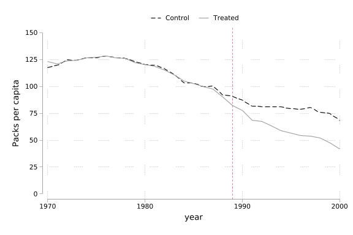
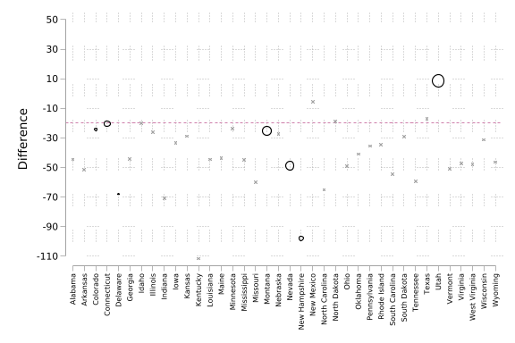
Finally, in the interests of completion, we can also conduct a standard difference-in-differences analysis in the same way, where in this case units are not given any differential weight, implying that trends will simply capture aggregate differences between the two groups. To do this, identical procedures are followed as above, simply indicating method(did). In this case, documented below, we note a clear divergence in trends starting in the earliest years of the panel, explaining why the treatment effect reported here is much larger than the effects reported with SDID (or SC). The fact that California was clearly trending in a more negative way to the mean of the donor pools suggest that parallel trends is unlikely to be a reasonable assumption. Instead, we may believe that trends may have continued to be more negative in California than in the average across control units, suggesting the DID assumptions should be avoided, in favour of synthetic methods, or some type of alternative strategy which does not rely on parallel trends assumptions.
Placebo replications (50). This may take some time.
----+--- 1 ---+--- 2 ---+--- 3 ---+--- 4 ---+--- 5
.................................................. 50
Difference-in-Differences Estimator
-----------------------------------------------------------------------------
cigsale | ATT Std. Err. t P>|t| [95% Conf. Interval]
-------------+---------------------------------------------------------------
treated | -27.34911 16.97736 -1.61 0.107 -60.62412 5.92590
-----------------------------------------------------------------------------
95% CIs and p-values are based on large-sample approximations.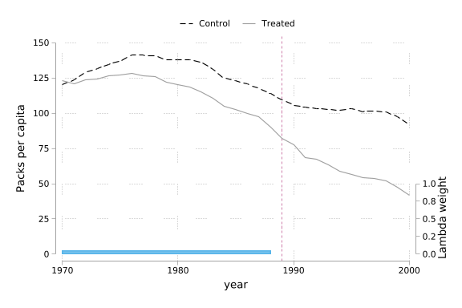
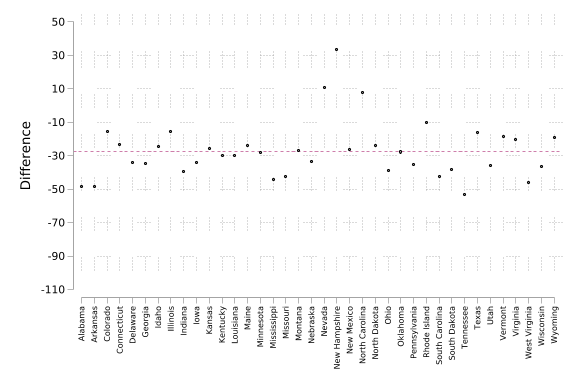
In Sun and Abraham (2021) you found a detailed explanation on how determinte the set \(C\), for this example \(C\) is the never treated units.↩︎
This can be seen by simply listing the set of adoption years, for example with: levelsof _nfd.↩︎
Excluding \(\ell = -1\).↩︎
This comes from the following property: Let \(X,Y\) be random variables and \(a,b\in\mathbb{R}\), then \(V(aX \pm bY) = a^2V(X) + b^2V(Y) \pm 2abCov(X,Y)\).↩︎